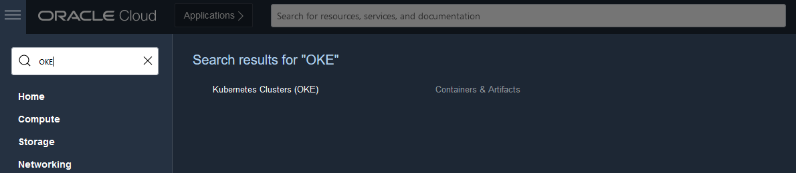
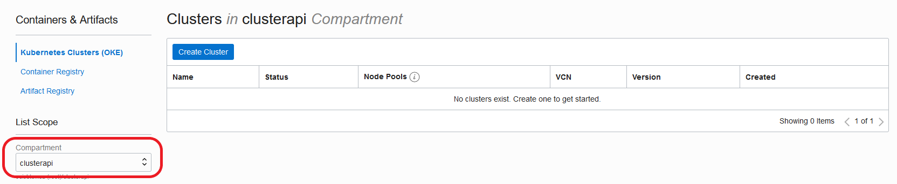
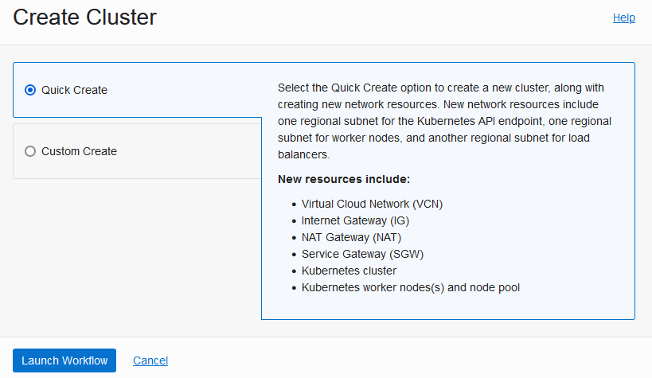
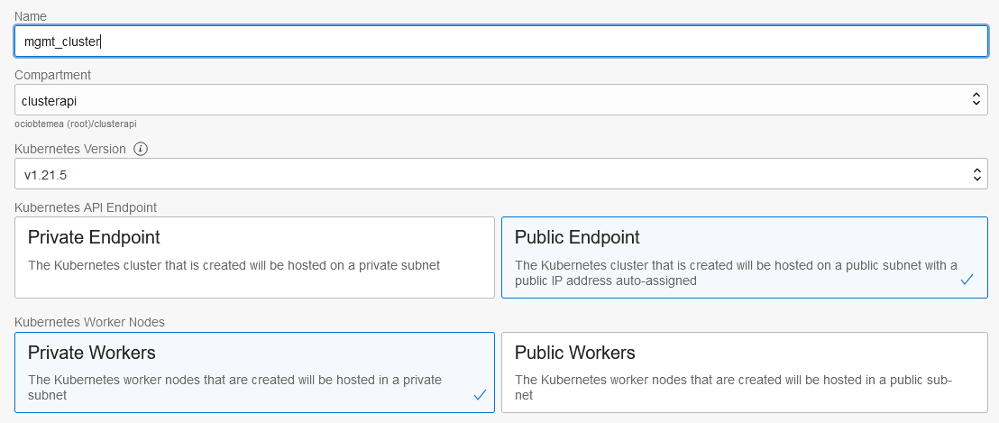

Kubernetes Cluster API Provider for Oracle Cloud Infrastructure
Kubernetes-native declarative infrastructure for Oracle Cloud Infrastructure (OCI).
What is the Cluster API Provider for OCI
The Cluster API Provider for OCI (CAPOCI) brings declarative, Kubernetes-style APIs to cluster creation, configuration and management.
The API itself is shared across multiple cloud providers allowing for true hybrid deployments of Kubernetes.
Features
- Self-managed and OCI Container Engine for Kubernetes(OKE) cluster support
- Manages the bootstrapping of VCNs, gateways, subnets, network security groups
- Provides secure and sensible defaults
Getting Started
- Prerequisites: Set up your OCI tenancy before using CAPOCI.
- Deployment process: Choosing your deployment path
- Networking: Networking guide
- Installation:
Support Policy
As the versioning for this project is tied to the versioning of Cluster API, future modifications to this policy may be made to more closely align with other providers in the Cluster API ecosystem.
Cluster API Versions
CAPOCI supports the following Cluster API versions.
| v1beta1 (v1.0) | |
|---|---|
| OCI Provider v1beta1 (v0.1) | ✓ |
Kubernetes versions
CAPOCI provider is able to install and manage the versions of Kubernetes supported by Cluster API (CAPI).
Prerequisites
Requirements
Getting started
This section contains information about enabling and configuring various Oracle Cloud Infrastructure (OCI) resources using the Kubernetes Cluster API Provider for OCI.
Getting started with Kubernetes Cluster API Provider for Oracle Cloud Infrastructure
Before deploying the Cluster API Provider for Oracle Cloud Infrastructure (CAPOCI), you must first configure the required Identity and Access Management (IAM) policies:

The following deployment options are available:
The following workflow diagrams provide a high-level overview of each deployment method described above:
Setting up a non-production management cluster

Setting up a management cluster using an initial bootstrap cluster

Setting up a management cluster using OKE

Setting up a management cluster using a 3rd party Kubernetes cluster

Complete the following steps in order to install and use CAPOCI:
- Choose your management cluster. You can use kind, OKE or any other compliant Kubernetes clusters.
- Prepare custom machine images
- Configure users and policies for the management cluster if required
- Provision a management cluster. You can use kind, OKE or any other compliant Kubernetes clusters.
- Install the necessary tools:
- Configure IAM for the workload cluster.
- Install Kubernetes Cluster API for Oracle Cloud Infrastructure (CAPOCI) in the management cluster.
- Create a workload cluster.
Configure Custom Machine Images
An image is a template of a virtual hard drive. It determines the operating system and other software for a compute instance. In order to use CAPOCI, you must prepare one or more custom images which have all the necessary Kubernetes components pre-installed. The custom image(s) will then be used to instantiate the Kubernetes nodes.
Building a custom image
To create your own custom image in your Oracle Cloud Infrastructure (OCI) tenancy, navigate to The Image Builder Book and follow the instructions for OCI.
Configure user and policies
- Configure policies for an OKE cluster
- Configure policies for a self-provisioned cluster
- User configuration and OCIDs
Configure OCI policies for an Oracle Container Engine for Kubernetes cluster
These steps are applicable if you intend to run your management cluster using Oracle Container Engine for Kubernetes (OKE). They need to be created by a user with admin privileges and are required so you can provision your OKE cluster successfully. If you plan to run your management cluster in kind or a non-OKE cluster, you can skip this step.
- Create a user in OCI e.g.
iaas_oke_usr - Create a group in OCI e.g.
iaas_oke_grpand add the useriaas_oke_usrto this group - Create a policy in OCI and add the following policies(Please read OKE Policy Configuration Doc for more fine grained policies):
Allow group iaas_oke_grp to manage dynamic groupsAllow group iaas_oke_grp to manage virtual-network-family in <compartment>Allow group iaas_oke_grp to manage cluster-family in <compartment>Allow group iaas_oke_grp to manage instance-family in <compartment>
where <compartment> is the name of the OCI compartment of the management cluster. Refer to the OCI documentation if you have not created a compartment yet.
Configure policies for a self-provisioned cluster
Although some policies required for Oracle Container Engine for Kubernetes (OKE) and self-provisioned clusters may overlap, we recommend you create another user and group for the principal that will be provisioning the self-provisioned clusters.
- Create a user in OCI e.g.
cluster_api_usr - Create a group in OCI e.g.
cluster_api_grpand add the usercluster_api_usrto this group - Create a policy in OCI and add the following policies:
Allow group cluster_api_grp to manage virtual-network-family in <compartment>Allow group cluster_api_grp to manage load-balancers in <compartment>Allow group cluster_api_grp to manage instance-family in <compartment>
where <compartment> is the name of the OCI compartment of the workload cluster. Your workload compartment may be different from the management compartment. Refer to the OCI documentation if you have not created a compartment yet.
If you are an administrator and you are experimenting with CAPOCI, you can skip creating the policies.
- Repeat the procedure as for the
iaas_oke_usrabove to obtain the IAM details.
User configuration and OCIDs
-
Login as the
iaas_oke_usrin the OCI Console to configure your OCI key. You can either use the OCI console or openssl to generate an API key. -
Obtain the following details which you will need in order to create your management cluster with OKE:
<compartment>OCID- Navigate to Identity > Compartments
- Click on your compartment
- Locate OCID on the page and click on Copy
- Tenancy OCID
- User OCID
- API key fingerprint
Provision a management cluster
Cluster API Provider for Oracle Cloud Infrastructure is installed into an existing Kubernetes cluster, called the management cluster.
You may use kind for experimental purposes or for creating a local bootstrap cluster which you will then use to provision a target management cluster.
For a more durable environment, we recommend using a managed Kubernetes service such as Oracle Container Engine for Kubernetes (OKE).
Provision a management cluster using kind
-
Create the cluster
kind create cluster -
Configure access
kubectl config set-context kind-kind
Provision a management cluster with Oracle Container Engine for Kubernetes
For this release, if you use Oracle Container Engine for Kubernetes (OKE) for your management cluster, you will be provisioning a public Kubernetes cluster i.e. its API server must be accessible to kubectl. You can use either use the OCI console to do the provisioning or the terraform-oci-oke project.
-
Login to the OCI Console as the
iaas_oke_usr -
Search for OKE and select it:

-
Select the right compartment where you will be creating the OKE Cluster:

-
Click Create Cluster, select Quick Create and click Launch Workflow:

-
Name your cluster and ensure you select Public Endpoint and choose Private Workers:

-
Click Next and Create Cluster.
-
When the cluster is ready, set up access to the OKE cluster. You can either use
If you are working with an existing Kubernetes cluster and have an existing kubeconfig in your $HOME/.kube/config directory, running the command to set up local access will add a new cluster context to your existing kubeconfig.
Install Cluster API Provider for Oracle Cloud Infrastructure
If you are not using kind for your management cluster, export the KUBECONFIG environment variable to point to the correct Kubeconfig file.
export KUBECONFIG=/path/to/kubeconfig
Configure authentication
Before installing Cluster API Provider for OCI (CAPOCI), you must first set up your preferred authentication mechanism using specific environment variables.
User Principal
If the management cluster is hosted outside OCI, for example a Kind cluster, please configure user principal using the following parameters. Please refer to the doc to generate the required credentials.
export OCI_TENANCY_ID=<insert-tenancy-id-here>
export OCI_USER_ID=<insert-user-ocid-here>
export OCI_CREDENTIALS_FINGERPRINT=<insert-fingerprint-here>
export OCI_REGION=<insert-region-here>
# if Passphrase is present
export OCI_TENANCY_ID_B64="$(echo -n "$OCI_TENANCY_ID" | base64 | tr -d '\n')"
export OCI_CREDENTIALS_FINGERPRINT_B64="$(echo -n "$OCI_CREDENTIALS_FINGERPRINT" | base64 | tr -d '\n')"
export OCI_USER_ID_B64="$(echo -n "$OCI_USER_ID" | base64 | tr -d '\n')"
export OCI_REGION_B64="$(echo -n "$OCI_REGION" | base64 | tr -d '\n')"
export OCI_CREDENTIALS_KEY_B64=$(base64 < <insert-path-to-api-private-key-file-here> | tr -d '\n')
# if Passphrase is present
export OCI_CREDENTIALS_PASSPHRASE=<insert-passphrase-here>
export OCI_CREDENTIALS_PASSPHRASE_B64="$(echo -n "$OCI_CREDENTIALS_PASSPHRASE" | base64 | tr -d '\n')"
Instance Principal
If the management cluster is hosted in Oracle Cloud Infrastructure, Instance principals authentication is recommended. Export the following parameters to use Instance Principals. If Instance Principals are used, the user principal parameters explained in above section will not be used.
export USE_INSTANCE_PRINCIPAL="true"
export USE_INSTANCE_PRINCIPAL_B64="$(echo -n "$USE_INSTANCE_PRINCIPAL" | base64 | tr -d '\n')"
Please ensure the following policies in the dynamic group for CAPOCI to be able to talk to various OCI Services.
allow dynamic-group [your dynamic group name] to manage instance-family in compartment [your compartment name]
allow dynamic-group [your dynamic group name] to manage virtual-network-family in compartment [your compartment name]
allow dynamic-group [your dynamic group name] to manage load-balancers in compartment [your compartment name]
Initialize management cluster
Initialize management cluster and install CAPOCI.
The following command will use the latest version:
clusterctl init --infrastructure oci
In production, it is recommended to set a specific released version.
clusterctl init --infrastructure oci:vX.X.X
CAPOCI Components
When installing CAPOCI, the following components will be installed in the management cluster:
- A custom resource definition (
CRD) forOCICluster, which is a Kubernetes custom resource that represents a workload cluster created in OCI by CAPOCI. - A custom resource definition (
CRD) forOCIMachine, which is a Kubernetes custom resource that represents one node in the workload cluster created in OCI by CAPOCI. - Role-based access control resources for a Kubernetes
Deployment,ServiceAccount,Role,ClusterRoleandClusterRoleBinding - A Kubernetes
Secretwhich will hold OCI credentials - A Kubernetes
Deploymentwith the CAPOCI image - ghcr.io/oracle/cluster-api-oci-controller:<version>
Please inspect the infrastructure-components.yaml present in the release artifacts to know more.
Create a workload cluster
Workload Cluster Templates
Choose one of the available templates for to create your workload clusters from the latest released artifacts. Please note that the templates provided are to be considered as references and can be customized further as the [CAPOCI API Reference][api-reference]. Each workload cluster template can be further configured with the parameters below.
Workload Cluster Parameters
The following Oracle Cloud Infrastructure (OCI) configuration parameters are available when creating a workload cluster on OCI using one of our predefined templates:
| Parameter | Default Value | Description |
|---|---|---|
OCI_COMPARTMENT_ID | The OCID of the compartment in which to create the required compute, storage and network resources. | |
OCI_IMAGE_ID | The OCID of the image for the kubernetes nodes. This same image is used for both the control plane and the worker nodes. | |
OCI_CONTROL_PLANE_MACHINE_TYPE | VM.Standard.E4.Flex | The shape of the Kubernetes control plane machine. |
OCI_CONTROL_PLANE_MACHINE_TYPE_OCPUS | 1 | The number of OCPUs allocated to the control plane instance. |
OCI_NODE_MACHINE_TYPE | VM.Standard.E4.Flex | The shape of the Kubernetes worker machine. |
OCI_NODE_MACHINE_TYPE_OCPUS | 1 | The number of OCPUs allocated to the worker instance. |
OCI_SSH_KEY | The public SSH key to be added to the Kubernetes nodes. It can be used to login to the node and troubleshoot failures. | |
OCI_CONTROL_PLANE_PV_TRANSIT_ENCRYPTION | true | Enables in-flight Transport Layer Security (TLS) 1.2 encryption of data between control plane nodes and their associated block storage devices. |
OCI_NODE_PV_TRANSIT_ENCRYPTION | true | Enables in-flight Transport Layer Security (TLS) 1.2 encryption of data between worker nodes and their associated block storage devices. |
Note: Only specific bare metal shapes support in-transit encryption. If an unsupported shape is specified, the deployment will fail completely.
Note: Using the predefined templates the machine's memory size is automatically allocated based on the chosen shape and OCPU count.
The following Cluster API parameters are also available:
| Parameter | Default Value | Description |
|---|---|---|
CLUSTER_NAME | The name of the workload cluster to create. | |
CONTROL_PLANE_MACHINE_COUNT | 1 | The number of control plane machines for the workload cluster. |
KUBERNETES_VERSION | The Kubernetes version installed on the workload cluster nodes. If this environment variable is not configured, the version must be specified in the .cluster-api/clusterctl.yaml file | |
NAMESPACE | The namespace for the workload cluster. If not specified, the current namespace is used. | |
POD_CIDR | 192.168.0.0/16 | CIDR range of the Kubernetes pod-to-pod network. |
SERVICE_CIDR | 10.128.0.0/12 | CIDR range of the Kubernetes pod-to-services network. |
NODE_MACHINE_COUNT | The number of worker machines for the workload cluster. |
Create a new workload cluster on virtual instances using an Ubuntu custom image
The following command will create a workload cluster comprising a single control plane node and single worker node using the default values as specified in the preceding Workload Cluster Parameters table:
OCI_COMPARTMENT_ID=<compartment-id> \
OCI_IMAGE_ID=<ubuntu-custom-image-id> \
OCI_SSH_KEY=<ssh-key> \
CONTROL_PLANE_MACHINE_COUNT=1 \
KUBERNETES_VERSION=v1.20.10 \
NAMESPACE=default \
NODE_MACHINE_COUNT=1 \
clusterctl generate cluster <cluster-name>\
--from cluster-template.yaml | kubectl apply -f -
Create a new workload cluster on bare metal instances using an Ubuntu custom image
The following command uses the OCI_CONTROL_PLANE_MACHINE_TYPE and OCI_NODE_MACHINE_TYPE
parameters to specify bare metal shapes instead of using CAPOCI's default virtual
instance shape. The OCI_CONTROL_PLANE_PV_TRANSIT_ENCRYPTION and OCI_NODE_PV_TRANSIT_ENCRYPTION
parameters disable encryption of data in flight between the bare metal instance and the block storage resources.
OCI_COMPARTMENT_ID=<compartment-id> \
OCI_IMAGE_ID=<ubuntu-custom-image-id> \
OCI_SSH_KEY=<ssh-key> \
OCI_CONTROL_PLANE_MACHINE_TYPE=BM.Standard2.52 \
OCI_CONTROL_PLANE_MACHINE_TYPE_OCPUS=52 \
OCI_CONTROL_PLANE_PV_TRANSIT_ENCRYPTION=false \
OCI_NODE_MACHINE_TYPE=BM.Standard2.52 \
OCI_NODE_MACHINE_TYPE_OCPUS=52 \
OCI_NODE_PV_TRANSIT_ENCRYPTION=false \
CONTROL_PLANE_MACHINE_COUNT=1 \
KUBERNETES_VERSION=v1.20.10 \
NAMESPACE=default \
WORKER_MACHINE_COUNT=1 \
clusterctl generate cluster <cluster-name>\
--from cluster-template.yaml| kubectl apply -f -
Create a new workload cluster on virtual instances using an Oracle Linux custom image
OCI_COMPARTMENT_ID=<compartment-id> \
OCI_IMAGE_ID=<oracle-linux-custom-image-id> \
OCI_SSH_KEY=<ssh-key> \
CONTROL_PLANE_MACHINE_COUNT=1 \
KUBERNETES_VERSION=v1.20.10 \
NAMESPACE=default \
WORKER_MACHINE_COUNT=1 \
clusterctl generate cluster <cluster-name>\
--from cluster-template-oraclelinux.yaml | kubectl apply -f -
Create a workload cluster in an alternative region
CAPOCI provides a way to launch and manage your workload cluster in multiple
regions. Choose the cluster-template-alternative-region.yaml template when
creating your workload clusters from the latest released artifacts.
Currently, the other templates do not support the ability to change the workload
cluster region.
Each cluster can be further configured with the parameters defined in Workload Cluster Parameters and additionally with the parameter below.
| Parameter | Default Value | Description |
|---|---|---|
OCI_WORKLOAD_REGION | Configured as OCI_REGION | The OCI region in which to launch the workload cluster. |
The following example configures the CAPOCI provider to authenticate in
us-phoenix-1 and launch a workload cluster in us-sanjose-1.
Note: Ensure the specified image is available in your chosen region or the launch will fail.
To configure authentication for management cluster, follow the steps in Configure authentication.
Extend the preceding configuration with the following additional configuration parameter and initialize the CAPOCI provider.
...
export OCI_REGION=us-phoenix-1
...
clusterctl init --infrastructure oci
Create a new workload cluster in San Jose (us-sanjose-1) by explicitly setting the
OCI_WORKLOAD_REGION environment variable when invoking clusterctl:
OCI_WORKLOAD_REGION=us-sanjose-1 \
OCI_COMPARTMENT_ID=<compartment-id> \
OCI_IMAGE_ID=<in-region-custom-image-id> \
OCI_SSH_KEY=<ssh-key> \
CONTROL_PLANE_MACHINE_COUNT=1 \
KUBERNETES_VERSION=v1.20.10 \
NAMESPACE=default \
NODE_MACHINE_COUNT=1 \
clusterctl generate cluster <cluster-name>\
--from cluster-template-alternative-region.yaml | kubectl apply -f -
Access workload cluster Kubeconfig
Execute the following command to list all the workload clusters present:
kubectl get clusters -A
Execute the following command to access the kubeconfig of a workload cluster:
clusterctl get kubeconfig <cluster-name> -n default > <cluster-name>.kubeconfig
Install a CNI Provider
After creating a workload cluster, a CNI provider must be installed in the workload cluster. Until you install a
a CNI provider, the cluster nodes will not go into the Ready state.
For example, you can install Calico as follows:
kubectl --kubeconfig=<cluster-name>.kubeconfig \
apply -f https://docs.projectcalico.org/v3.21/manifests/calico.yaml
You can use your preferred CNI provider. Currently, the following providers have been tested and verified to work:
If you have tested an alternative CNI provider and verified it to work, please send us a PR to add it to the list.
If you have an issue with your alternative CNI provider, please raise an issue on GitHub.
Install OCI Cloud Controller Manager and CSI in a self-provisioned cluster
By default, the OCI Cloud Controller Manager (CCM) is not installed into a workload cluster. To install the OCI CCM, follow these instructions.
Create a workload cluster with MachineHealthChecks (MHC)
To better understand MachineHealthChecks please read over the Cluster-API book and make sure to read the limitations sections.
Create a new workload cluster with MHC
In the project's code repository we provide an example template that sets up two MachineHealthChecks at workload creation time. The example sets up two MHCs to allow differing remediation values:
control-plane-unhealthy-5msetups a health check for the control plane machinesmd-unhealthy-5msets up a health check for the workload machines
NOTE: As a part of the example template the MHCs will start remediating nodes that are
not readyafter 10 minutes. In order prevent this side effect make sure to install your CNI once the API is available. This will move the machines into aReadystate.
Add MHC to existing workload cluster
Another approach is to install MHC after the cluster is up and healthy (aka Day-2 Operation). This can prevent machine remediation while setting up the cluster.
Adding the MHC to either control-plane or machine is a multistep process. The steps are run on specific clusters (e.g. management cluster, workload cluster):
- Update the spec for future instances (management cluster)
- Add label to existing nodes (workload cluster)
- Add the MHC (management cluster)
Add control-plane MHC
Update control plane spec
We need to add the controlplane.remediation label to the KubeadmControlPlane.
Create a file named control-plane-patch.yaml that has this content:
spec:
machineTemplate:
metadata:
labels:
controlplane.remediation: ""
Then on the management cluster run
kubectl patch KubeadmControlPlane <your-cluster-name>-control-plane --patch-file control-plane-patch.yaml --type=merge.
Add label to existing nodes
Then on the workload cluster add the new label to any existing control-plane node(s)
kubectl label node <control-plane-name> controlplane.remediation="". This will prevent the KubeadmControlPlane provisioning
new nodes once the MHC is deployed.
Add the MHC
Finally, create a file named control-plane-mhc.yaml that has this content:
apiVersion: cluster.x-k8s.io/v1beta1
kind: MachineHealthCheck
metadata:
name: "<your-cluster-name>-control-plane-unhealthy-5m"
spec:
clusterName: "<your-cluster-name>"
maxUnhealthy: 100%
nodeStartupTimeout: 10m
selector:
matchLabels:
controlplane.remediation: ""
unhealthyConditions:
- type: Ready
status: Unknown
timeout: 300s
- type: Ready
status: "False"
timeout: 300s
Then on the management cluster run kubectl apply -f control-plane-mhc.yaml.
Then run kubectl get machinehealthchecks to check your MachineHealthCheck sees the expected machines.
Add machine MHC
Update machine spec
We need to add the machine.remediation label to the MachineDeployment.
Create a file named machine-patch.yaml that has this content:
spec:
template:
metadata:
labels:
machine.remediation: ""
Then on the management cluster run
kubectl patch MachineDeployment oci-cluster-stage-md-0 --patch-file machine-patch.yaml --type=merge.
Add label to existing nodes
Then on the workload cluster add the new label to any existing control-plane node(s)
kubectl label node <machine-name> machine.remediation="". This will prevent the MachineDeployment provisioning
new nodes once the MHC is deployed.
Add the MHC
Finally, create a file named machine-mhc.yaml that has this content:
apiVersion: cluster.x-k8s.io/v1beta1
kind: MachineHealthCheck
metadata:
name: "<your-cluster-name>-stage-md-unhealthy-5m"
spec:
clusterName: "oci-cluster-stage"
maxUnhealthy: 100%
nodeStartupTimeout: 10m
selector:
matchLabels:
machine.remediation: ""
unhealthyConditions:
- type: Ready
status: Unknown
timeout: 300s
- type: Ready
status: "False"
timeout: 300s
Then on the management cluster run kubectl apply -f machine-mhc.yaml.
Then run kubectl get machinehealthchecks to check your MachineHealthCheck sees the expected machines.
Create a GPU workload cluster
Accessing GPU Shapes
Some shapes are limited to specific regions and specific Availability Domains (AD). In order to make sure the workload cluster comes up check the region and AD for shape availability.
Check shape availability
Make sure the OCI CLI is installed. Then set the AD information if using muti-AD regions.
NOTE: Use the OCI Regions and Availability Domains page to figure out which regions have multiple ADs.
oci iam availability-domain list --compartment-id=<your compartment> --region=<region>
Using the AD name from the output start searching for GPU shape availability.
oci compute shape list --compartment-id=<your compartment> --profile=DEFAULT --region=us-ashburn-1 --availability-domain=<your AD ID> | grep GPU
"shape-name": "BM.GPU3.8"
"shape-name": "BM.GPU4.8"
"shape-name": "VM.GPU3.1"
"shape": "VM.GPU2.1"
NOTE: If the output is empty then the compartment for that region/AD doesn't have GPU shapes. If you are unable to locate any shapes you may need to submit a service limit increase request
Create a new GPU workload cluster an Ubuntu custom image
NOTE: Nvidia GPU drivers aren't supported for Oracle Linux at this time. Ubuntu is currently the only supported OS.
When launching a multi-AD region shapes are likely be limited to a specific AD (example: US-ASHBURN-AD-2).
To make sure the cluster comes up without issue specifically target just that AD for the GPU worker nodes.
To do that modify the released version of the cluster-template-failure-domain-spread.yaml template.
Download the latest cluster-template-failure-domain-spread.yaml file and save it as
cluster-template-gpu.yaml.
Make sure the modified template has only the MachineDeployment section(s) where there is GPU
availability and remove all the others. See the full example file
that targets only AD 2 (OCI calls them Availability Domains while Cluster-API calls them Failure Domains).
Virtual instances
The following command will create a workload cluster comprising a single control plane node and single GPU worker node using the default values as specified in the preceding Workload Cluster Parameters table:
NOTE: The
OCI_NODE_MACHINE_TYPE_OCPUSmust match the OPCU count of the GPU shape. See the Compute Shapes page to get the OCPU count for the specific shape.
OCI_COMPARTMENT_ID=<compartment-id> \
OCI_IMAGE_ID=<ubuntu-custom-image-id> \
OCI_SSH_KEY=<ssh-key> \
NODE_MACHINE_COUNT=1 \
OCI_NODE_MACHINE_TYPE=VM.GPU3.1 \
OCI_NODE_MACHINE_TYPE_OCPUS=6 \
OCI_CONTROL_PLANE_MACHINE_TYPE_OCPUS=1 \
OCI_CONTROL_PLANE_MACHINE_TYPE=VM.Standard3.Flex \
CONTROL_PLANE_MACHINE_COUNT=1 \
OCI_SHAPE_MEMORY_IN_GBS= \
KUBERNETES_VERSION=v1.24.4 \
clusterctl generate cluster <cluster-name> \
--target-namespace default \
--from cluster-template-gpu.yaml | kubectl apply -f -
Bare metal instances
The following command uses the OCI_CONTROL_PLANE_MACHINE_TYPE and OCI_NODE_MACHINE_TYPE
parameters to specify bare metal shapes instead of using CAPOCI's default virtual
instance shape. The OCI_CONTROL_PLANE_PV_TRANSIT_ENCRYPTION and OCI_NODE_PV_TRANSIT_ENCRYPTION
parameters disable encryption of data in flight between the bare metal instance and the block storage resources.
NOTE: The
OCI_NODE_MACHINE_TYPE_OCPUSmust match the OPCU count of the GPU shape. See the Compute Shapes page to get the OCPU count for the specific shape.
OCI_COMPARTMENT_ID=<compartment-id> \
OCI_IMAGE_ID=<ubuntu-custom-image-id> \
OCI_SSH_KEY=<ssh-key> \
OCI_NODE_MACHINE_TYPE=BM.GPU3.8 \
OCI_NODE_MACHINE_TYPE_OCPUS=52 \
OCI_NODE_PV_TRANSIT_ENCRYPTION=false \
OCI_CONTROL_PLANE_MACHINE_TYPE=VM.Standard3.Flex \
CONTROL_PLANE_MACHINE_COUNT=1 \
OCI_SHAPE_MEMORY_IN_GBS= \
KUBERNETES_VERSION=v1.24.4 \
clusterctl generate cluster <cluster-name> \
--target-namespace default \
--from cluster-template-gpu.yaml | kubectl apply -f -
Access workload cluster Kubeconfig
Execute the following command to list all the workload clusters present:
kubectl get clusters -A
Execute the following command to access the kubeconfig of a workload cluster:
clusterctl get kubeconfig <cluster-name> -n default > <cluster-name>.kubeconfig
Install a CNI Provider, OCI Cloud Controller Manager and CSI in a self-provisioned cluster
To provision the CNI and Cloud Controller Manager follow the Install a CNI Provider and the Install OCI Cloud Controller Manager sections.
Install Nvidia GPU Operator
Setup the worker instances to use the GPUs install the Nvidia GPU Operator.
For the most up-to-date install instructions see the official install instructions. They layout how to install the Helm tool and how to setup the Nvidia helm repo.
With Helm setup you can now install the GPU-Operator
helm install --wait --generate-name \
-n gpu-operator --create-namespace \
nvidia/gpu-operator
The pods will take a while to come up but you can check the status:
kubectl --<cluster-name>.kubeconf get pods -n gpu-operator
Test GPU on worker node
Once all of the GPU-Operator pods are running or completed deploy the test pod:
cat <<EOF | kubectl --kubeconfig=<cluster-name>.kubeconf apply -f -
apiVersion: v1
kind: Pod
metadata:
name: cuda-vector-add
spec:
restartPolicy: OnFailure
containers:
- name: cuda-vector-add
# https://github.com/kubernetes/kubernetes/blob/v1.7.11/test/images/nvidia-cuda/Dockerfile
image: "registry.k8s.io/cuda-vector-add:v0.1"
resources:
limits:
nvidia.com/gpu: 1 # requesting 1 GPU
EOF
Then check the output logs of the cuda-vector-add test pod:
kubectl --kubeconfig=<cluster-name>.kubeconf logs cuda-vector-add -n default
[Vector addition of 50000 elements]
Copy input data from the host memory to the CUDA device
CUDA kernel launch with 196 blocks of 256 threads
Copy output data from the CUDA device to the host memory
Test PASSED
Done
Example yaml file
This is an example file using a modified version of cluster-template-failure-domain-spread.yaml
to target AD 2 (example: US-ASHBURN-AD-2).
apiVersion: cluster.x-k8s.io/v1beta1
kind: Cluster
metadata:
labels:
cluster.x-k8s.io/cluster-name: "${CLUSTER_NAME}"
name: "${CLUSTER_NAME}"
namespace: "${NAMESPACE}"
spec:
clusterNetwork:
pods:
cidrBlocks:
- ${POD_CIDR:="192.168.0.0/16"}
serviceDomain: ${SERVICE_DOMAIN:="cluster.local"}
services:
cidrBlocks:
- ${SERVICE_CIDR:="10.128.0.0/12"}
infrastructureRef:
apiVersion: infrastructure.cluster.x-k8s.io/v1beta2
kind: OCICluster
name: "${CLUSTER_NAME}"
namespace: "${NAMESPACE}"
controlPlaneRef:
apiVersion: controlplane.cluster.x-k8s.io/v1beta1
kind: KubeadmControlPlane
name: "${CLUSTER_NAME}-control-plane"
namespace: "${NAMESPACE}"
---
apiVersion: infrastructure.cluster.x-k8s.io/v1beta2
kind: OCICluster
metadata:
labels:
cluster.x-k8s.io/cluster-name: "${CLUSTER_NAME}"
name: "${CLUSTER_NAME}"
spec:
compartmentId: "${OCI_COMPARTMENT_ID}"
---
kind: KubeadmControlPlane
apiVersion: controlplane.cluster.x-k8s.io/v1beta1
metadata:
name: "${CLUSTER_NAME}-control-plane"
namespace: "${NAMESPACE}"
spec:
version: "${KUBERNETES_VERSION}"
replicas: ${CONTROL_PLANE_MACHINE_COUNT}
machineTemplate:
infrastructureRef:
kind: OCIMachineTemplate
apiVersion: infrastructure.cluster.x-k8s.io/v1beta2
name: "${CLUSTER_NAME}-control-plane"
namespace: "${NAMESPACE}"
kubeadmConfigSpec:
clusterConfiguration:
kubernetesVersion: ${KUBERNETES_VERSION}
apiServer:
certSANs: [localhost, 127.0.0.1]
dns: {}
etcd: {}
networking: {}
scheduler: {}
initConfiguration:
nodeRegistration:
criSocket: /var/run/containerd/containerd.sock
kubeletExtraArgs:
cloud-provider: external
provider-id: oci://{{ ds["id"] }}
joinConfiguration:
discovery: {}
nodeRegistration:
criSocket: /var/run/containerd/containerd.sock
kubeletExtraArgs:
cloud-provider: external
provider-id: oci://{{ ds["id"] }}
---
kind: OCIMachineTemplate
apiVersion: infrastructure.cluster.x-k8s.io/v1beta2
metadata:
name: "${CLUSTER_NAME}-control-plane"
spec:
template:
spec:
imageId: "${OCI_IMAGE_ID}"
compartmentId: "${OCI_COMPARTMENT_ID}"
shape: "${OCI_CONTROL_PLANE_MACHINE_TYPE=VM.Standard.E4.Flex}"
shapeConfig:
ocpus: "${OCI_CONTROL_PLANE_MACHINE_TYPE_OCPUS=1}"
metadata:
ssh_authorized_keys: "${OCI_SSH_KEY}"
isPvEncryptionInTransitEnabled: ${OCI_CONTROL_PLANE_PV_TRANSIT_ENCRYPTION=true}
---
apiVersion: infrastructure.cluster.x-k8s.io/v1beta2
kind: OCIMachineTemplate
metadata:
name: "${CLUSTER_NAME}-md"
spec:
template:
spec:
imageId: "${OCI_IMAGE_ID}"
compartmentId: "${OCI_COMPARTMENT_ID}"
shape: "${OCI_NODE_MACHINE_TYPE=VM.Standard.E4.Flex}"
shapeConfig:
ocpus: "${OCI_NODE_MACHINE_TYPE_OCPUS=1}"
metadata:
ssh_authorized_keys: "${OCI_SSH_KEY}"
isPvEncryptionInTransitEnabled: ${OCI_NODE_PV_TRANSIT_ENCRYPTION=true}
---
apiVersion: bootstrap.cluster.x-k8s.io/v1alpha4
kind: KubeadmConfigTemplate
metadata:
name: "${CLUSTER_NAME}-md"
spec:
template:
spec:
joinConfiguration:
nodeRegistration:
kubeletExtraArgs:
cloud-provider: external
provider-id: oci://{{ ds["id"] }}
---
apiVersion: cluster.x-k8s.io/v1beta1
kind: MachineDeployment
metadata:
name: "${CLUSTER_NAME}-fd-2-md-0"
spec:
clusterName: "${CLUSTER_NAME}"
replicas: ${NODE_MACHINE_COUNT}
selector:
matchLabels:
template:
spec:
clusterName: "${CLUSTER_NAME}"
version: "${KUBERNETES_VERSION}"
bootstrap:
configRef:
name: "${CLUSTER_NAME}-md"
apiVersion: bootstrap.cluster.x-k8s.io/v1beta1
kind: KubeadmConfigTemplate
infrastructureRef:
name: "${CLUSTER_NAME}-md"
apiVersion: infrastructure.cluster.x-k8s.io/v1beta2
kind: OCIMachineTemplate
# Cluster-API calls them Failure Domains while OCI calls them Availability Domains
# In the example this would be targeting US-ASHBURN-AD-2
failureDomain: "2"
Create a Windows workload cluster
Overview
CAPOCI enables users to create and manage Windows workload clusters in Oracle Cloud Infrastructure (OCI). This means that the Kubernetes Control Plane will be Linux and the nodes will be Windows. First, users build the Windows image using image-builder, then use the Windows flavor template from the latest release. Finally, install the Calico CNI Provider and OCI Cloud Controller Manager.
Known Limitations
The Windows workload cluster has known limitations:
- Limited to Standard Bare Metal (BM) shapes
- Limited to OCI provided platform images. See image-build documentation for more details
- Custom image MUST be built using the same shape of Bare Metal the worker nodes will run
- CNI provider support is Calico in VXLAN mode
- Block volumes are not currently supported
- Bring Your Own License (BYOL) is not supported
- See Calico windows docs for their limitations
Licensing
BYOL is currently not supported using CAPOCI. For more info on Windows Licensing see the Compute FAQ documentation.
Build Windows image
NOTE: It is recommended to check shape availability before building image(s)
In order to launch Windows instances for the cluster a Windows image, using image-builder, will need to be built. It is important to make sure the same shape is used to build and launch the instance.
Example: If a BM.Standard2.52 is used to build then the OCI_NODE_MACHINE_TYPE MUST
be BM.Standard2.52
Check shape availability
Make sure the OCI CLI is installed. Then set the AD information if using muti-AD regions.
NOTE: Use the OCI Regions and Availability Domains page to figure out which regions have multiple ADs.
oci iam availability-domain list --compartment-id=<your compartment> --region=<region>
Using the AD name from the output above start searching for BM shape availability.
oci compute shape list --compartment-id=<your compartment> --profile=DEFAULT --region=us-ashburn-1 --availability-domain=<your AD ID> | grep BM
"shape": "BM.Standard.E3.128"
"shape-name": "BM.Standard2.52"
"shape-name": "BM.Standard.E3.128"
"shape": "BM.Standard.E2.64"
"shape-name": "BM.Standard2.52"
"shape-name": "BM.Standard3.64"
"shape": "BM.Standard1.36"
NOTE: If the output is empty then the compartment for that region/AD doesn't have BM shapes. If you are unable to locate any shapes you may need to submit a service limit increase request
Create a new Windows workload cluster
It is recommended to have the following guides handy:
When using clusterctl to generate the cluster use the windows-calico example flavor.
The following command uses the OCI_CONTROL_PLANE_MACHINE_TYPE and OCI_NODE_MACHINE_TYPE
parameters to specify bare metal shapes instead of using CAPOCI's default virtual
instance shape. The OCI_CONTROL_PLANE_PV_TRANSIT_ENCRYPTION and OCI_NODE_PV_TRANSIT_ENCRYPTION
parameters disable encryption of data in flight between the bare metal instance and the block storage resources.
NOTE: The
OCI_NODE_MACHINE_TYPE_OCPUSmust match the OPCU count of the BM shape. See the Compute Shapes page to get the OCPU count for the specific shape.
OCI_COMPARTMENT_ID=<compartment-id> \
OCI_CONTROL_PLANE_IMAGE_ID=<linux-custom-image-id> \
OCI_NODE_IMAGE_ID=<windows-custom-image-id> \
OCI_SSH_KEY=<ssh-key> \
NODE_MACHINE_COUNT=1 \
OCI_NODE_MACHINE_TYPE=BM.Standard.E4.128 \
OCI_NODE_MACHINE_TYPE_OCPUS=128 \
OCI_NODE_PV_TRANSIT_ENCRYPTION=false \
OCI_CONTROL_PLANE_MACHINE_TYPE_OCPUS=3 \
OCI_CONTROL_PLANE_MACHINE_TYPE=VM.Standard3.Flex \
CONTROL_PLANE_MACHINE_COUNT=3 \
OCI_SHAPE_MEMORY_IN_GBS= \
KUBERNETES_VERSION=<k8s-version> \
clusterctl generate cluster <cluster-name> \
--target-namespace default \
--flavor windows-calico | kubectl apply -f -
Access workload cluster Kubeconfig
Execute the following command to list all the workload clusters present:
kubectl get clusters -A
Execute the following command to access the kubeconfig of a workload cluster:
clusterctl get kubeconfig <cluster-name> -n default > <cluster-name>.kubeconfig
Install Calico CNI Provider and OCI Cloud Controller Manager
Install Calico
The Calico for Windows getting started guide should be read for better understand of the CNI on Windows. It is recommended to have the following guides handy:
The steps to follow:
On the management cluster
- Run
to get thekubectl get OCICluster <cluster-name> -o jsonpath='{.spec.controlPlaneEndpoint.host}'KUBERNETES_SERVICE_HOSTinfo that will be used in later steps
On the workload cluster
- Download the v3.24.5 calico release
curl -L https://github.com/projectcalico/calico/releases/download/v3.24.5/release-v3.24.5.tgz -o calico-v3.24.5.tgz - Uncompress the downloaded file and locate the
calico-vxlan.yaml,calico-windows-vxlan.yamlandwindows-kube-proxy.yamlfiles in themanifestsdir - Edit the
calico-vxlan.yamland modify the follow variables to allow Calico running on the nodes use VXLANCALICO_IPV4POOL_IPIP- set to"Never"CALICO_IPV4POOL_VXLAN- set to"Always"
-
kubectl apply -f calico-vxlan.yaml - Wait for the IPAMConfig to be loaded
-
kubectl patch IPAMConfig default --type merge --patch='{"spec": {"strictAffinity": true}}' - Edit the
calico-windows-vxlan.yamland modify the follow variables to allow Calico running on the nodes to talk to the Kubernetes control planeKUBERNETES_SERVICE_HOST- the IP address from the management cluster stepKUBERNETES_SERVICE_PORT- the port from step the management cluster stepK8S_SERVICE_CIDR- The service CIDR set in the cluster templateDNS_NAME_SERVERS- the IP address from dns servicekubectl get svc kube-dns -n kube-system -o jsonpath='{.spec.clusterIP}'- Change the namespace from
calico-systemtokube-system - add the following
envto the container namednode- name: VXLAN_ADAPTER value: "Ethernet 2"
-
(it takes a bit for this to pass livenessprobe)kubectl apply -f calico-windows-vxlan.yaml - Edit the
windows-kube-proxy.yaml- update the
kube-proxycontainer environment variableK8S_VERSIONto the version of kubernetes you are deploying - update the
imageversion for the container namedkube-proxyand make sure to set the correct windows nanoserver version example:ltsc2019
- update the
-
kubectl apply -f windows-kube-proxy.yaml
Install OCI Cloud Controller Manager
By default, the OCI Cloud Controller Manager (CCM) is not installed into a workload cluster. To install the OCI CCM, follow these instructions.
Scheduling Windows containers
With the cluster in a ready state and CCM installed, an example deployment
can be used to test that pods are scheduled. Accessing the deployed pods and using nslookup you can
test that the cluster DNS is working.
Create Workload Templates for Oracle Cloud Infrastructure
You can create workload clusters based on template files or you can also save the templates in ConfigMaps that you can then reuse.
Creating cluster templates ConfigMaps
- Create a cluster template for Oracle Linux:
kubectl create cm oracletemplate --from-file=template=templates/cluster-template-oraclelinux.yaml
- Create a cluster template for Ubuntu:
kubectl create cm ubuntutemplate --from-file=template=templates/cluster-template.yaml
You can then reuse the ConfigMap to create your clusters. For example, to create a workload cluster using Oracle Linux, you can create it as follows:
OCI_COMPARTMENT_ID=<compartment-id> \
OCI_IMAGE_ID=<oracle-linux-custom-image-id> \
OCI_SSH_KEY=<ssh-key> \
CONTROL_PLANE_MACHINE_COUNT=1 \
KUBERNETES_VERSION=v1.20.10 \
NAMESPACE=default \
WORKER_MACHINE_COUNT=1 \
clusterctl generate cluster <cluster-name>\
--from-config-map oracletemplate | kubectl apply -f -
Likewise, to create a workload cluster using Ubuntu:
OCI_COMPARTMENT_ID=<compartment-id> \
OCI_IMAGE_ID=<ubuntu-custom-image-id> \
OCI_SSH_KEY=<ssh-key> \
CONTROL_PLANE_MACHINE_COUNT=1 \
KUBERNETES_VERSION=v1.20.10 \
NAMESPACE=default \
WORKER_MACHINE_COUNT=1 \
clusterctl generate cluster <cluster-name>\
--from-config-map ubuntutemplate | kubectl apply -f -
Externally managed Cluster infrastructure
By default, Cluster API will create resources on Oracle Cloud Infrastructure (OCI) when instantiating a new workload cluster. However, it is possible to have Cluster API re-use an existing OCI infrastructure instead of creating a new one. The existing infrastructure could include:
- Virtual cloud networks (VCNs)
- Network load balancers used as Kubernetes API Endpoint
Example spec for externally managed VCN infrastructure
CAPOCI can be used to create a cluster using existing VCN infrastructure. In this case, only the API Server Load Balancer will be managed by CAPOCI.
Example spec is given below
apiVersion: infrastructure.cluster.x-k8s.io/v1beta2
kind: OCICluster
metadata:
name: "${CLUSTER_NAME}"
spec:
compartmentId: "${OCI_COMPARTMENT_ID}"
networkSpec:
skipNetworkManagement: true
vcn:
id: <Insert VCN OCID Here>
networkSecurityGroup:
list:
- id: <Insert Control Plane Endpoint NSG OCID Here>
role: control-plane-endpoint
name: control-plane-endpoint
- id: <Insert Worker NSG OCID Here>
role: worker
name: worker
- id: <Insert Control Plane NSG OCID Here>
role: control-plane
name: control-plane
subnets:
- id: <Insert Control Plane Endpoint Subnet OCID Here>
role: control-plane-endpoint
name: control-plane-endpoint
- id: <Insert Worker Subnet OCID Here>
role: worker
name: worker
- id: <Insert control Plane Subnet OCID Here>
role: control-plane
name: control-plane
In the above spec, note that name has to be mentioned for Subnet/NSG. This is so that Kubernetes can merge the list properly when there is an update.
Example spec for externally managed VCN, Subnet, Internet Gateway, Nat Gateway, Service Gateway and routing table, but the other networking components are still managed by CAPOCI (e.g. Network Security Groups)
Example spec is given below
apiVersion: infrastructure.cluster.x-k8s.io/v1beta2
kind: OCICluster
metadata:
name: "${CLUSTER_NAME}"
spec:
compartmentId: "${OCI_COMPARTMENT_ID}"
networkSpec:
vcn:
skip: true
id: <Insert VCN OCID Here> // REQUIRED
networkSecurityGroup:
skip: false
internetGateway:
skip: true // REQUIRED
natGateway:
skip: true // REQUIRED
serviceGateway:
skip: true // REQUIRED
routeTable:
skip: true // REQUIRED
subnets:
- id: <Insert control Plane Subnet OCID Here> // REQUIRED
role: control-plane-endpoint
name: control-plane-endpoint
type: public
skip: true
- id: <Insert control Plane Subnet OCID Here> // REQUIRED
role: worker
name: worker
type: private
skip: true
- id: <Insert control Plane Subnet OCID Here> // REQUIRED
role: control-plane
name: control-plane
type: private
skip: true
- id: <Insert control Plane Subnet OCID Here> // REQUIRED
role: service-lb
name: service-lb
type: public
skip: true
Example OCICluster Spec with external infrastructure
CAPOCI supports externally managed cluster infrastructure.
If the OCICluster resource includes a cluster.x-k8s.io/managed-by annotation, then the controller will skip any reconciliation.
This is useful for scenarios where a different persona is managing the cluster infrastructure out-of-band while still wanting to use CAPOCI for automated machine management.
The following OCICluster Spec includes the mandatory fields to be specified for externally managed infrastructure to work properly. In this example neither the VCN nor the network load balancer will be managed by CAPOCI.
apiVersion: infrastructure.cluster.x-k8s.io/v1beta2
kind: OCICluster
metadata:
labels:
cluster.x-k8s.io/cluster-name: "${CLUSTER_NAME}"
annotations:
cluster.x-k8s.io/managed-by: "external"
name: "${CLUSTER_NAME}"
spec:
compartmentId: "${OCI_COMPARTMENT_ID}"
controlPlaneEndpoint:
host: <Control Plane Endpoint Address should go here>
port: 6443
networkSpec:
apiServerLoadBalancer:
loadBalancerId: <OCID of Control Plane Endpoint LoadBalancer>
vcn:
id: <OCID of VCN>
networkSecurityGroup:
list:
- id: <OCID of Control Plane NSG>
name: <Name of Control Plane NSG>
role: control-plane
- id: <OCID of Worker NSG>
name: <Name of Worker NSG>
role: worker
subnets:
- id: <OCID of Control Plane Subnet>
role: control-plane
- id: <OCID of Worker Subnet>
role: worker
Status
As per the Cluster API Provider specification, the OCICluster Status Object has to be updated with ready status
as well as the failure domain mapping. This has to be done after the OCICluster object has been created in the management cluster.
The following cURL request illustrates this:
Get a list of Availability Domains of the region:
oci iam availability-domain list
Review the OCI CLI documentation for more information regarding this tool.
For 1-AD regions, use the following cURL command to update the status object:
curl -o -s -X PATCH -H "Accept: application/json, */*" \
-H "Content-Type: application/merge-patch+json" \
--cacert ca.crt \
--cert client.crt \
--key client.key \
https://<management-plane-api-endpoint>/apis/infrastructure.cluster.x-k8s.io/v1beta2/namespaces/<cluster-namespace>/ociclusters/<cluster-name>/status \
--data '{"status":{"ready":true,"failureDomains":{"1":{"attributes":{"AvailabilityDomain":"zkJl:AP-HYDERABAD-1-AD-1","FaultDomain":"FAULT-DOMAIN-1"},"controlPlane":true},"2":{"attributes":{"AvailabilityDomain":"zkJl:AP-HYDERABAD-1-AD-1","FaultDomain":"FAULT-DOMAIN-2"},"controlPlane":true},"3":{"attributes":{"AvailabilityDomain":"zkJl:AP-HYDERABAD-1-AD-1","FaultDomain":"FAULT-DOMAIN-3"}}}}}'
For 3-AD regions, use the following cURL command to update the status object:
curl -o -s -X PATCH -H "Accept: application/json, */*" \
-H "Content-Type: application/merge-patch+json" \
--cacert ca.crt \
--cert client.crt \
--key client.key \
https://<management-plane-api-endpoint>/apis/infrastructure.cluster.x-k8s.io/v1beta2/namespaces/<cluster-namespace>/ociclusters/<cluster-name>/status \
--data '{"status":{"ready":true,"failureDomains":{"1":{"attributes":{"AvailabilityDomain":"zkJl:US-ASHBURN-1-AD-1"},"controlPlane":true},"2":{"attributes":{"AvailabilityDomain":"zkJl:US-ASHBURN-1-AD-2"},"controlPlane":true},"3":{"attributes":{"AvailabilityDomain":"zkJl:US-ASHBURN-1-AD-3"}}}}}'
Install Oracle Cloud Infrastructure Cloud Controller Manager
Oracle Cloud Infrastructure (OCI) Cloud Controller Manager is OCI's implementation of the Kubernetes control plane component that links your Kubernetes cluster to OCI.
Configure authentication via Instance Principal (Recommended)
Oracle recommends using Instance principals to be used by CCM for authentication. Please ensure the following policies in the dynamic group for CCM to be able to talk to various OCI Services.
allow dynamic-group [your dynamic group name] to read instance-family in compartment [your compartment name]
allow dynamic-group [your dynamic group name] to use virtual-network-family in compartment [your compartment name]
allow dynamic-group [your dynamic group name] to manage load-balancers in compartment [your compartment name]
-
Download the example configuration file:
curl -L https://raw.githubusercontent.com/oracle/oci-cloud-controller-manager/master/manifests/provider-config-instance-principals-example.yaml -o cloud-provider-example.yaml -
Update values in the configuration file as necessary.
As an example using the provided
cluster-template.yamlyou would modify thecloud-provider-example.yamland make sure to setcompartmentandvcnwith the correct OCIDs. Then setsubnet1to the OCID of yourservice-lbsubnet and removesubnet2. You would then setsecurityListManagementModeto"None". -
Create a secret:
kubectl create secret generic oci-cloud-controller-manager \ -n kube-system \ --from-file=cloud-provider.yaml=cloud-provider-example.yaml
Install CCM
-
Navigate to the release page of CCM and export the version that you want to install. Typically, the latest version can be installed.
export CCM_RELEASE_VERSION=<update-version-here> -
Download the deployment manifests:
curl -L "https://github.com/oracle/oci-cloud-controller-manager/releases/download/${CCM_RELEASE_VERSION}/oci-cloud-controller-manager.yaml" -o oci-cloud-controller-manager.yaml curl -L "https://github.com/oracle/oci-cloud-controller-manager/releases/download/${CCM_RELEASE_VERSION}/oci-cloud-controller-manager-rbac.yaml" -o oci-cloud-controller-manager-rbac.yaml -
Deploy the CCM:
kubectl apply -f oci-cloud-controller-manager.yaml -
Deploy the RBAC rules:
kubectl apply -f oci-cloud-controller-manager-rbac.yaml -
Check the CCM logs to verify OCI CCM is running correctly:
kubectl -n kube-system get po | grep oci oci-cloud-controller-manager-ds-k2txq 1/1 Running 0 19s kubectl -n kube-system logs oci-cloud-controller-manager-ds-k2txq
Install CSI
On Oracle Cloud Infrastructure (OCI), there are two types of storage services available to store persistent data:
- OCI Block Volume Service
- OCI File Storage Service
A persistent volume claim (PVC) is a request for storage, which is met by binding the PVC to a persistent volume (PV). A PVC provides an abstraction layer to the underlying storage. CSI drivers for both the Block Volume Service and File Storage Service have been implemented.
Configure authentication via Instance Principal
Oracle recommends using Instance principals to be used by CSI for authentication. Please ensure the following policies in the dynamic group for CSI to be able to talk to various OCI Services.
allow dynamic-group [your dynamic group name] to use instance-family in compartment [your compartment name]
allow dynamic-group [your dynamic group name] to use virtual-network-family in compartment [your compartment name]
allow dynamic-group [your dynamic group name] to manage volume-family in compartment [your compartment name]
-
Download the example configuration file:
curl -L https://raw.githubusercontent.com/oracle/oci-cloud-controller-manager/master/manifests/provider-config-instance-principals-example.yaml -o cloud-provider-example.yaml -
Update values in the configuration file as necessary.
-
Create a secret:
kubectl create secret generic oci-volume-provisioner \ -n kube-system \ --from-file=config.yaml=cloud-provider-example.yaml
Install CSI Drivers
-
Navigate to the release page of CCM and export the version that you want to install. Typically, the latest version can be installed.
export CCM_RELEASE_VERSION=<update-version-here> -
Download the deployment manifests:
curl -L "https://github.com/oracle/oci-cloud-controller-manager/releases/download/${CCM_RELEASE_VERSION}/oci-csi-node-rbac.yaml" -o oci-csi-node-rbac.yaml curl -L "https://github.com/oracle/oci-cloud-controller-manager/releases/download/${CCM_RELEASE_VERSION}/oci-csi-controller-driver.yaml" -o oci-csi-controller-driver.yaml curl -L h"ttps://github.com/oracle/oci-cloud-controller-manager/releases/download/${CCM_RELEASE_VERSION}/oci-csi-node-driver.yaml" -o oci-csi-node-driver.yaml curl -L https://raw.githubusercontent.com/oracle/oci-cloud-controller-manager/master/manifests/container-storage-interface/storage-class.yaml -o storage-class.yaml -
Create the RBAC rules:
kubectl apply -f oci-csi-node-rbac.yaml -
Deploy the csi-controller-driver. It is provided as a deployment and it has three containers:
csi-provisioner external-provisionercsi-attacher external-attacheroci-csi-controller-driver
kubectl apply -f oci-csi-controller-driver.yaml
-
Deploy the
node-driver. It is provided as a daemon set and it has two containers:node-driver-registraroci-csi-node-driver
kubectl apply -f oci-csi-node-driver.yaml -
Create the CSI storage class for the Block Volume Service:
kubectl apply -f storage-class.yaml -
Verify the
oci-csi-controller-driverandoci-csi-node-controllerare running in your cluster:kubectl -n kube-system get po | grep csi-oci-controller kubectl -n kube-system get po | grep csi-oci-node
Provision PVCs
Follow the guides below to create PVCs based on the service you require:
Provision a PVC on the Block Volume Service
The Oracle Cloud Infrastructure Block Volume service (the Block Volume service) provides persistent, durable, and high-performance block storage for your data.
Create a block volume dynamically using a new PVC
If the cluster administrator has not created any suitable PVs that match the PVC request, you can dynamically provision a block volume using the CSI plugin specified by the oci-bv storage class's definition (provisioner: blockvolume.csi.oraclecloud.com).
-
Define a PVC in a yaml file (
csi-bvs-pvc.yaml)as below:apiVersion: v1 kind: PersistentVolumeClaim metadata: name: mynginxclaim spec: storageClassName: "oci-bv" accessModes: - ReadWriteOnce resources: requests: storage: 50Gi -
Apply the manifest to create the PVC
kubectl create -f csi-bvs-pvc.yaml -
Verify that the PVC has been created:
kubectl get pvc -
The output from the above command shows the current status of the PVC:
NAME STATUS VOLUME CAPACITY ACCESSMODES STORAGECLASS AGE mynginxclaim Pending oci-bv 4mThe PVC has a status of Pending because the
oci-bvstorage class's definition includesvolumeBindingMode: WaitForFirstConsumer. -
You can use this PVC when creating other objects, such as pods. For example, you could create a new pod from the following pod definition, which instructs the system to use the
mynginxclaimPVC as the NGINX volume, which is mounted by the pod at/data.apiVersion: v1 kind: Pod metadata: name: nginx spec: containers: - name: nginx image: nginx:latest ports: - name: http containerPort: 80 volumeMounts: - name: data mountPath: /usr/share/nginx/html volumes: - name: data persistentVolumeClaim: claimName: mynginxclaim -
After creating the new pod, verify that the PVC has been bound to a new persistent volume (PV):
kubectl get pvcThe output from the above command confirms that the PVC has been bound:
NAME STATUS VOLUME CAPACITY ACCESSMODES STORAGECLASS AGE mynginxclaim Bound ocid1.volume.oc1.iad.<unique_ID> 50Gi RWO oci-bv 4m -
Verify that the pod is using the new PVC:
kubectl describe pod nginx
Provision a PVC on the File Storage Service
The Oracle Cloud Infrastructure File Storage service provides a durable, scalable, distributed, enterprise-grade network file system.
Provision PVCs on the File Storage Service (FSS)
Provisioning PVCs on FSS consists of 3 steps:
- Create an FSS instance and a mount target
- Define and create a PV backed by FSS
- Define and create a PVC provisioned by the PV
Configure the VCN and create an FSS
- Choose your deployment scenario:
- Mount target and worker nodes in the same subnet
- Mount target and worker nodes in different subnets
- Mount target and instance use in-transit encryption
- Implement security rules based on your deployment scenario
- Create a FSS instance
Define and create a PV backed by FSS
-
Create a yaml file (
fss-pv.yaml) to define the PV:apiVersion: v1 kind: PersistentVolume metadata: name: fss-pv spec: capacity: storage: 50Gi volumeMode: Filesystem accessModes: - ReadWriteMany persistentVolumeReclaimPolicy: Retain csi: driver: fss.csi.oraclecloud.com volumeHandle: ocid1.filesystem.oc1.iad.aaaa______j2xw:10.0.0.6:/FileSystem1 -
In the yaml file, set:
drivervalue to:fss.csi.oraclecloud.comvolumeHandlevalue to:<FileSystemOCID>:<MountTargetIP>:<path>
The
<FileSystemOCID>is the OCID of the file system defined in the File Storage service, the<MountTargetIP>is the IP address assigned to the mount target and the<path>is the mount path to the file system relative to the mount target IP address, starting with a slash. -
Create the PV from the manifest file:
kubectl create -f fss-pv.yaml
Define and create a PVC provisioned by the PV
-
Create a manifest file (
fss-pvc.yaml) to define the PVC:apiVersion: v1 kind: PersistentVolumeClaim metadata: name: fss-pvc spec: accessModes: - ReadWriteMany storageClassName: "" resources: requests: storage: 50Gi volumeName: fss-pv -
In the YAML file, set:
storageClassNameto""volumeNameto the name of the PV created earlier
-
Create the PVC from the manifest file:
kubectl create -f fss-pvc.yaml
Customizing worker nodes
Configure user managed boot volume encryption
Use the following configuration in OCIMachineTemplate to use a customer
managed boot volume encryption key.
kind: OCIMachineTemplate
apiVersion: infrastructure.cluster.x-k8s.io/v1beta2
spec:
template:
spec:
instanceSourceViaImageConfig:
kmsKeyId: <kms-key-id>
Configure shielded instances
Use the following configuration in OCIMachineTemplate to create shielded instances.
Below example is for an AMD based VM. Please read the CAPOCI github page PlatformConfig struct
for an enumeration of all the possible configurations.
kind: OCIMachineTemplate
apiVersion: infrastructure.cluster.x-k8s.io/v1beta2
spec:
template:
spec:
platformConfig:
platformConfigType: "AMD_VM"
amdVmPlatformConfig:
isSecureBootEnabled: true
isTrustedPlatformModuleEnabled: true
isMeasuredBootEnabled: true
Configure confidential instances
Use the following configuration in OCIMachineTemplate to create confidential instances.
Below example is for an AMD based VM. Please read the CAPOCI github page PlatformConfig struct
for an enumeration of all the possible configurations.
kind: OCIMachineTemplate
apiVersion: infrastructure.cluster.x-k8s.io/v1beta2
spec:
template:
spec:
platformConfig:
platformConfigType: "AMD_VM"
amdVmPlatformConfig:
isMemoryEncryptionEnabled: true
Configure preemptible instances
Use the following configuration in OCIMachineTemplate to create preemtible instances.
kind: OCIMachineTemplate
apiVersion: infrastructure.cluster.x-k8s.io/v1beta2
spec:
template:
spec:
preemptibleInstanceConfig:
terminatePreemptionAction:
preserveBootVolume: false
Configure capacity reservation
Use the following configuration in OCIMachineTemplate to use capacity reservations.
kind: OCIMachineTemplate
apiVersion: infrastructure.cluster.x-k8s.io/v1beta2
spec:
template:
spec:
capacityReservationId: <capacity-reservation-id>
Configure Oracle Cloud Agent plugins
Use the following configuration in OCIMachineTemplate to configure Oracle Cloud Agent plugins.
The example below enables Bastion plugin.
kind: OCIMachineTemplate
apiVersion: infrastructure.cluster.x-k8s.io/v1beta2
spec:
template:
spec:
agentConfig:
pluginsConfigs:
- name: "Bastion"
desiredState: "ENABLED"
Configure Burstable Instances
Use the following configuration in OCIMachineTemplate to configure Burstable Instance.
The following values are supported for baselineOcpuUtilization.
- BASELINE_1_8 - baseline usage is 1/8 of an OCPU.
- BASELINE_1_2 - baseline usage is 1/2 of an OCPU.
- BASELINE_1_1 - baseline usage is an entire OCPU. This represents a non-burstable instance.
kind: OCIMachineTemplate
apiVersion: infrastructure.cluster.x-k8s.io/v1beta2
spec:
template:
spec:
shapeConfig:
baselineOcpuUtilization: "BASELINE_1_8"
ocpus: "1"
Multi-tenancy
CAPOCI supports multi-tenancy wherein different OCI user principals can be used to reconcile different OCI clusters. This is achieved by associating a cluster with a Cluster Identity and associating the identity with a user principal. Currently only OCI user principal is supported for Cluster Identity.
Steps
Step 1 - Create a secret with user principal in the management cluster
Please read the doc to know more about the parameters below.
apiVersion: v1
kind: Secret
metadata:
name: user-credentials
namespace: default
type: Opaque
data:
tenancy: <base-64-encoded value of tenancy OCID>
user: <base-64-encoded value of user OCID>
key: <base-64-encoded value of user Key>
fingerprint: <base-64-encoded value of fingerprint>
passphrase: <base-64-encoded value of passphrase. This is optional>
region: <base-64-encoded value of region. This is optional>
Step 2 - Edit the cluster template to add a Cluster Identity section and point the OCICluster to the Cluster Identity
The Cluster Identity should have a reference to the secret created above.
---
kind: OCIClusterIdentity
metadata:
name: cluster-identity
namespace: default
spec:
type: UserPrincipal
principalSecret:
name: user-credentials
namespace: default
allowedNamespaces: {}
---
apiVersion: infrastructure.cluster.x-k8s.io/v1beta2
kind: OCICluster
metadata:
labels:
cluster.x-k8s.io/cluster-name: "${CLUSTER_NAME}"
name: "${CLUSTER_NAME}"
spec:
compartmentId: "${OCI_COMPARTMENT_ID}"
identityRef:
apiVersion: infrastructure.cluster.x-k8s.io/v1beta2
kind: OCIClusterIdentity
name: cluster-identity
namespace: default
allowedNamespaces
allowedNamespaces can be used to control which namespaces the OCIClusters are allowed to use the identity from.
Namespaces can be selected either using an array of namespaces or with label selector.
An empty allowedNamespaces object indicates that OCIClusters can use this identity from any namespace.
If this object is nil, no namespaces will be allowed, which is the default behavior of the field if not specified.
Note: NamespaceList will take precedence over Selector if both are set.
Cluster Identity using Instance Principals
Cluster Identity also supports Instance Principals. The example OCIClusterIdentity
spec shown below uses Instance Principals.
---
apiVersion: infrastructure.cluster.x-k8s.io/v1beta2
kind: OCIClusterIdentity
metadata:
name: cluster-identity
namespace: default
spec:
type: InstancePrincipal
allowedNamespaces: {}
Cluster Identity using Workload Identity
Cluster Identity supports Workload access to OCI resources also knows as Workload Identity. The example
OCIClusterIdentity spec shown below uses Workload Identity.
---
apiVersion: infrastructure.cluster.x-k8s.io/v1beta2
kind: OCIClusterIdentity
metadata:
name: cluster-identity
namespace: default
spec:
type: Workload
allowedNamespaces: {}
CAPOCI, by default create a Service Account capoci-controller-manager in namespace cluster-api-provider-oci-system.
Workload identity needs to have policies required to create OKE or Self managed clusters. For example, the following
policies will provide Workload identity with permissions to create OKE cluster.
Allow any-user to manage virtual-network-family in compartment <compartment> where all { request.principal.type = 'workload', request.principal.namespace = 'cluster-api-provider-oci-system', request.principal.service_account = 'capoci-controller-manager'}Allow any-user to manage cluster-family in compartment <compartment> where all { request.principal.type = 'workload', request.principal.namespace = 'cluster-api-provider-oci-system', request.principal.service_account = 'capoci-controller-manager'}Allow any-user to manage volume-family in compartment <compartment> where all { request.principal.type = 'workload', request.principal.namespace = 'cluster-api-provider-oci-system', request.principal.service_account = 'capoci-controller-manager'}Allow any-user to manage instance-family in compartment <compartment> where all { request.principal.type = 'workload', request.principal.namespace = 'cluster-api-provider-oci-system', request.principal.service_account = 'capoci-controller-manager'}Allow any-user to inspect compartments in compartment <compartment> where all { request.principal.type = 'workload', request.principal.namespace = 'cluster-api-provider-oci-system', request.principal.service_account = 'capoci-controller-manager'}
Advanced Options
Disable OCI Client initialization on startup
CAPOCI supports setting OCI principals at cluster level, hence CAPOCI can be installed without providing OCI user credentials. The following environment variable need to be exported to install CAPOCI without providing any OCI credentials.
export INIT_OCI_CLIENTS_ON_STARTUP=false
If the above setting is used, and Cluster Identity is not used, the OCICluster will go into error state, and the following error will show up in the CAPOCI pod logs.
OCI authentication credentials could not be retrieved from pod or cluster level,please install Cluster API Provider for OCI with OCI authentication credentials or set Cluster Identity in the OCICluster
Setup heterogeneous cluster
This section assumes you have setup a Windows workload cluster.
To add Linux nodes to the existing Windows workload cluster use the following YAML as a guide to provision just the new Linux machines.
Create a file and call it cluster-template-windows-calico-heterogeneous.yaml. Then add the following:
apiVersion: infrastructure.cluster.x-k8s.io/v1beta1
kind: OCIMachineTemplate
metadata:
name: "${CLUSTER_NAME}-md-0"
spec:
template:
spec:
imageId: "${OCI_IMAGE_ID}"
compartmentId: "${OCI_COMPARTMENT_ID}"
shape: "${OCI_NODE_MACHINE_TYPE=VM.Standard.E4.Flex}"
shapeConfig:
ocpus: "${OCI_NODE_MACHINE_TYPE_OCPUS=1}"
metadata:
ssh_authorized_keys: "${OCI_SSH_KEY}"
isPvEncryptionInTransitEnabled: ${OCI_NODE_PV_TRANSIT_ENCRYPTION=true}
---
apiVersion: bootstrap.cluster.x-k8s.io/v1alpha4
kind: KubeadmConfigTemplate
metadata:
name: "${CLUSTER_NAME}-md-0"
spec:
template:
spec:
joinConfiguration:
nodeRegistration:
kubeletExtraArgs:
cloud-provider: external
provider-id: oci://{{ ds["id"] }}
---
apiVersion: cluster.x-k8s.io/v1beta1
kind: MachineDeployment
metadata:
name: "${CLUSTER_NAME}-md-0"
spec:
clusterName: "${CLUSTER_NAME}"
replicas: ${NODE_MACHINE_COUNT}
selector:
matchLabels:
template:
spec:
clusterName: "${CLUSTER_NAME}"
version: "${KUBERNETES_VERSION}"
bootstrap:
configRef:
name: "${CLUSTER_NAME}-md-0"
apiVersion: bootstrap.cluster.x-k8s.io/v1beta1
kind: KubeadmConfigTemplate
infrastructureRef:
name: "${CLUSTER_NAME}-md-0"
apiVersion: infrastructure.cluster.x-k8s.io/v1beta1
kind: OCIMachineTemplate
Then apply the template
OCI_IMAGE_ID=<your new linux image OCID> \
OCI_NODE_IMAGE_ID=<your new linux image OCID> \
OCI_COMPARTMENT_ID=<your compartment> \
NODE_MACHINE_COUNT=2 \
OCI_NODE_MACHINE_TYPE=<shape> \
OCI_NODE_MACHINE_TYPE_OCPUS=4 \
OCI_SSH_KEY="<your public ssh key>" \
clusterctl generate cluster <cluster-name> --kubernetes-version <kubernetes-version> \
--target-namespace default \
--from cluster-template-windows-calico-heterogeneous.yaml | kubectl apply -f -
After a few minutes the instances will come up and the CNI will be installed.
Node constraints
All future deployments make sure to setup node constraints using something like nodeselctor. Example:
| Windows | Linux |
|---|---|
nodeSelector: kubernetes.io/os: windows | nodeSelector:kubernetes.io/os: linux |
nodeSelector examples - click to expand
Linux nginx deployment example:
apiVersion: apps/v1
kind: Deployment
metadata:
name: my-nginx-linux
spec:
selector:
matchLabels:
run: my-nginx-linux
replicas: 2
template:
metadata:
labels:
run: my-nginx-linux
spec:
nodeSelector:
kubernetes.io/os: linux
containers:
- args:
- /bin/sh
- -c
- sleep 3600
name: nginx
image: nginx:latest
For a Windows deployment example see the Kubernetes Getting Started: Deploying a Windows workload documentation
Without doing this it is possible that the Kubernetes scheduler will try to deploy your Windows pods onto a Linux worker, or vice versa.
Networking Guide
This section contains information about the networking aspects of Cluster API Provider OCI.
Default Network Infrastructure
The diagram below depicts the networking architecture for a public workload cluster created in a region such as US West (Phoenix).

Each workload cluster requires an OCI Virtual Cloud Network (VCN) which houses all the resources created for the workload cluster. The default VCN has the following resources:
-
Gateways:
-
Route Tables:
- A route table for public subnets which will route stateful traffic to and from the Internet Gateway
- A route table for private subnets which will route stateful traffic to and from the NAT and Service Gateways
-
Subnets:
- A public Control plane endpoint subnet which houses an OCI Load Balancer. The load balancer acts as a reverse proxy for the Kubernetes API Server.
- A private Control plane subnet which houses the Control plane nodes. The Control plane nodes run the Kubernetes Control plane components such as the API Server and the Control plane pods.
- A public subnet which houses the service load balancers.
- A private subnet which houses the worker nodes.
-
Network Security Groups (NSG):
- An NSG for the Control plane endpoint (Control plane Endpoint NSG)
- An NSG for the Kubernetes Control plane nodes (Control plane NSG)
- An NSG for the service load balancers (Worker NSG)
- An NSG for the Kubernetes worker nodes (Service Load Balancers NSG)
The sections below list the security rules required for the NSGs in each of the following CNI providers:
Currently, the following providers have been tested and verified to work:
If you have tested an alternative CNI provider and verified it to work, please send us a PR to add it to the list. Your PR for your tested CNI provider should include the following:
- CNI provider version tested
- Documentation of NSG rules required
- A YAML template for your tested provider. See the Antrea template as an example.
Using Calico
This section lists the security rules that must be implemented in the network security groups (NSGs) in order to use Calico as a CNI provider.
Control plane endpoint NSG
The control plane endpoint NSG will be attached to the OCI load balancer. The egress and ingress rules are listed below.
Control plane endpoint NSG egress rules
| Destination Type | Destination | Destination Port | Protocol | Description |
|---|---|---|---|---|
| CIDR block | 10.0.0.0/29 | 6443 | TCP | Allow HTTPS traffic to Control plane for Kubernetes API server access |
Control plane endpoint NSG ingress rules
| Source Type | Source | Destination Port | Protocol | Description |
|---|---|---|---|---|
| CIDR block | 0.0.0.0/0 | 6443 | TCP | Allow public access to endpoint OCI load balancer |
Control plane NSG
The OCI compute instances running the Kubernetes control plane components will be attached to this NSG.
Control plane NSG egress rules
| Destination Type | Destination | Destination Port | Protocol | Description |
|---|---|---|---|---|
| CIDR block | 0.0.0.0/0 | All | ALL | Control plane access to Internet to pull images |
Ingress Rules
| Source Type | Source | Destination Port | Protocol | Description |
|---|---|---|---|---|
| CIDR block | 10.0.0.8/29 | 6443 | TCP | Kubernetes API endpoint to Kubernetes control plane communication |
| CIDR block | 10.0.0.0/29 | 6443 | TCP | Control plane to control plane (API server port) communication |
| CIDR block | 10.0.64.0/20 | 6443 | TCP | Worker Node to Kubernetes control plane (API Server) communication |
| CIDR block | 10.0.0.0/29 | 10250 | TCP | Control Plane to Control Plane Kubelet Communication |
| CIDR block | 10.0.0.0/29 | 2379 | TCP | etcd client communication |
| CIDR block | 10.0.0.0/29 | 2380 | TCP | etcd peer communication |
| CIDR block | 10.0.0.0/29 | 179 | TCP | Calico networking (BGP) |
| CIDR block | 10.0.64.0/20 | 179 | TCP | Calico networking (BGP) |
| CIDR block | 10.0.0.0/29 | IP-in-IP | Calico networking with IP-in-IP enabled | |
| CIDR block | 10.0.64.0/20 | IP-in-IP | Calico networking with IP-in-IP enabled | |
| CIDR block | 10.0.0.0/16 | ICMP Type 3, Code 4 | MTU Path discovery | |
| CIDR block | 0.0.0.0/0 | 22 | TCP | Inbound SSH traffic to control plane nodes |
Worker NSG
The OCI compute instances which running as Kubernetes worker nodes will be attached to this NSG.
Worker NSG egress rules
| Destination Type | Destination | Destination Port | Protocol | Description |
|---|---|---|---|---|
| CIDR block | 0.0.0.0/0 | All | All | Worker node access to Internet to pull images |
Worker NSG ingress rules
| Source Type | Source | Destination Port | Protocol | Description |
|---|---|---|---|---|
| CIDR block | 10.0.0.32/27 | 32000-32767 | TCP | Allow incoming traffic from service load balancers (NodePort Communication) |
| CIDR block | 10.0.0.0/29 | 10250 | TCP | Control plane to worker node (Kubelet Communication) |
| CIDR block | 10.0.64.0/20 | 10250 | TCP | Worker nodes to worker node (Kubelet Communication) |
| CIDR block | 10.0.0.0/29 | 179 | TCP | Calico networking (BGP) |
| CIDR block | 10.0.64.0/20 | 179 | TCP | Calico networking (BGP) |
| CIDR block | 10.0.0.0/29 | IP-in-IP | Calico networking with IP-in-IP enabled | |
| CIDR block | 10.0.64.0/20 | IP-in-IP | Calico networking with IP-in-IP enabled | |
| CIDR block | 10.0.0.0/16 | ICMP Type 3, Code 4 | MTU Path discovery | |
| CIDR block | 0.0.0.0/0 | 22 | TCP | Inbound SSH traffic to worker nodes |
Service Load Balancers NSG
OCI load balancers created as part of Kubernetes services of type LoadBalancer will be attached to this NSG.
Service Load Balancers NSG egress rules
| Destination Type | Destination | Destination Port | Protocol | Description |
|---|---|---|---|---|
| CIDR block | 10.0.64.0/20 | 32000-32767 | TCP | Allow access to NodePort services from Service Load balancers |
Service Load Balancers NSG ingress rules
| Source Type | Source | Destination Port | Protocol | Description |
|---|---|---|---|---|
| CIDR block | 0.0.0.0/0 | 80, 443 | TCP | Allow incoming traffic to services |
Using Antrea
This section lists the security rules that must be implemented in the Network Security Groups (NSGs) in order to use Antrea as a CNI provider.
Control plane endpoint NSG
The Control plane Endpoint NSG will be attached to the OCI Load Balancer. The egress and ingress rules are listed below.
Control plane endpoint NSG egress rules
| Destination Type | Destination | Destination Port | Protocol | Description |
|---|---|---|---|---|
| CIDR Block | 10.0.0.0/29 | 6443 | TCP | Allow HTTPS Traffic to Control plane for Kubernetes API Server access |
Control plane endpoint NSG ingress rules
| Source Type | Source | Destination Port | Protocol | Description |
|---|---|---|---|---|
| CIDR Block | 0.0.0.0/0 | 6443 | TCP | Allow public access to endpoint OCI Load Balancer |
Control plane NSG
The OCI Compute instances running the Kubernetes Control plane components will be attached to this NSG.
Control plane NSG egress rules
| Destination Type | Destination | Destination Port | Protocol | Description |
|---|---|---|---|---|
| CIDR Block | 0.0.0.0/0 | All | ALL | Control plane access to Internet to pull images |
Control plane NSG ingress rules
| Source Type | Source | Destination Port | Protocol | Description |
|---|---|---|---|---|
| CIDR Block | 10.0.0.8/29 | 6443 | TCP | Kubernetes API endpoint to Kubernetes Control plane communication |
| CIDR Block | 10.0.0.0/29 | 6443 | TCP | Control plane to Control plane (API Server port) communication |
| CIDR Block | 10.0.64.0/20 | 6443 | TCP | Worker Node to Kubernetes Control plane (API Server port)communication |
| CIDR block | 10.0.0.0/29 | 10250 | TCP | Control Plane to Control Plane Kubelet Communication |
| CIDR Block | 10.0.0.0/29 | 2379 | TCP | etcd client communication |
| CIDR Block | 10.0.0.0/29 | 2380 | TCP | etcd peer communication |
| CIDR Block | 10.0.0.0/29 | 10349 | TCP | Antrea Service |
| CIDR Block | 10.0.64.0/20 | 10349 | TCP | Antrea Service |
| CIDR Block | 10.0.0.0/29 | 6081 | UDP | Geneve Service |
| CIDR Block | 10.0.64.0/20 | 6081 | UDP | Geneve Service |
| CIDR Block | 10.0.0.0/16 | ICMP Type 3, Code 4 | Path discovery | |
| CIDR Block | 0.0.0.0/0 | 22 | TCP | Inbound SSH traffic to Control plane nodes |
Worker NSG
The OCI Compute instances which running as Kubernetes worker nodes will be attached to this NSG.
Worker NSG egress rules
| Destination Type | Destination | Destination Port | Protocol | Description |
|---|---|---|---|---|
| CIDR Block | 0.0.0.0/0 | All | All | Worker Nodes access to Internet to pull images |
Worker NSG ingress rules
| Source Type | Source | Destination Port | Protocol | Description |
|---|---|---|---|---|
| CIDR Block | 10.0.0.32/27 | 32000-32767 | TCP | Allow incoming traffic from service load balancers (NodePort Communication) |
| CIDR Block | 10.0.0.0/29 | 10250 | TCP | Control plane to worker node (Kubelet Communication) |
| CIDR Block | 10.0.64.0/20 | 10250 | TCP | Worker nodes to worker node (Kubelet Communication) |
| CIDR Block | 10.0.0.0/29 | 10349 | TCP | Antrea Service |
| CIDR Block | 10.0.64.0/20 | 10349 | TCP | Antrea Service |
| CIDR Block | 10.0.0.0/29 | 6081 | UDP | Geneve Service |
| CIDR Block | 10.0.64.0/20 | 6081 | UDP | Geneve Service |
| CIDR Block | 10.0.0.0/16 | ICMP Type 3, Code 4 | Path discovery | |
| CIDR Block | 0.0.0.0/0 | 22 | TCP | Inbound SSH traffic to worker nodes |
Service load balancers NSG
OCI load balancers created as part of Kubernetes Services of type LoadBalancer will be attached to this NSG.
Service load balancers NSG egress rules
| Destination Type | Destination | Destination Port | Protocol | Description |
|---|---|---|---|---|
| CIDR Block | 10.0.64.0/20 | 32000-32767 | TCP | Allow access to NodePort services from Service Load balancers |
Service load balancers NSG ingress rules
| Source Type | Source | Destination Port | Protocol | Description |
|---|---|---|---|---|
| CIDR Block | 0.0.0.0/0 | 80, 443 | TCP | Allow incoming traffic to services |
IPv6 Global Unicast Address (GUA) Allocated by Oracle Guide
This section contains information about the IPv6 aspects of Cluster API Provider OCI.
In order to have a VM created with IPv6 Ip assigned you should have the following defined:
- For OCICluster:
-
networkSpec: vcn: isIpv6Enabled: true subnets: - ipv6CidrBlockHextet: "01"
-
- example:
---
apiVersion: infrastructure.cluster.x-k8s.io/v1beta2
kind: OCICluster
metadata:
labels:
cluster.x-k8s.io/cluster-name: "${CLUSTER_NAME}"
name: "${CLUSTER_NAME}"
spec:
compartmentId: "${OCI_COMPARTMENT_ID}"
networkSpec:
vcn:
isIpv6Enabled: true
subnets:
- ipv6CidrBlockHextet: "01"
name: control-plane-endpoint
role: control-plane-endpoint
type: public
- ipv6CidrBlockHextet: "02"
name: control-plane
role: control-plane
type: private
- ipv6CidrBlockHextet: "03"
name: service-lb
role: service-lb
type: public
- ipv6CidrBlockHextet: "04"
name: worker
role: worker
type: private
- For OCIMachineTemplate:
-
networkDetails: assignIpv6Ip: true
-
- example:
---
apiVersion: infrastructure.cluster.x-k8s.io/v1beta2
kind: OCIMachineTemplate
metadata:
name: "${CLUSTER_NAME}-md-0"
spec:
template:
spec:
imageId: "${OCI_IMAGE_ID}"
compartmentId: "${OCI_COMPARTMENT_ID}"
shape: "${OCI_NODE_MACHINE_TYPE=VM.Standard.E5.Flex}"
shapeConfig:
ocpus: "${OCI_NODE_MACHINE_TYPE_OCPUS=1}"
metadata:
ssh_authorized_keys: "${OCI_SSH_KEY}"
isPvEncryptionInTransitEnabled: ${OCI_NODE_PV_TRANSIT_ENCRYPTION=true}
networkDetails:
assignIpv6Ip: true
Note:
- VCNs, subnets and VMs can be asigned with IPv6 just at creation step. After creation they can be updated with IPv6 just from UI console.
- You cannot create a VM with IPv6 in a subnet/vcn without IPv6 enabled capabilities.
- Once VCNs, subnets are enabled with IPv6 cannot unassign their IPv6 CIDRs.
- CAPOCI don't support BYOIP IPv6 prefix at the moment.
Custom networking
The default networking can be modified to achieve the following:
- your own CIDR range for VCN. This is useful if you want to perform peering with another VCN or another cloud provider and you need to avoid IP Overlapping
- your own custom security rules using NSGs. This is useful if you want to use your own CNI provider and it has a different security posture than the default
- your own custom security rules using network security lists
- change the masks and name of your different subnets. This is useful to either expand or constrain the size of your subnets as well as to use your own preferred naming convention
The OCICluster spec in the cluster templates can be modified to customize the network spec.
Example spec for custom CIDR range
The spec below shows how to change the CIDR range of the VCN from the default 10.0.0.0/16 to 172.16.0.0/16.
apiVersion: infrastructure.cluster.x-k8s.io/v1beta2
kind: OCICluster
metadata:
name: "${CLUSTER_NAME}"
spec:
compartmentId: "${OCI_COMPARTMENT_ID}"
networkSpec:
vcn:
name: ${CLUSTER_NAME}
cidr: "172.16.0.0/16"
subnets:
- name: ep-subnet
role: control-plane-endpoint
type: public
cidr: "172.16.0.0/28"
- name: cp-mc-subnet
role: control-plane
type: private
cidr: "172.16.5.0/28"
- name: worker-subnet
role: worker
type: private
cidr: "172.16.10.0/24"
- name: svc-lb-subnet
role: service-lb
type: public
cidr: "172.16.20.0/24"
Example spec to modify default NSG security rules
The spec below shows how to change the default NSG rules.
---
apiVersion: infrastructure.cluster.x-k8s.io/v1beta2
kind: OCICluster
metadata:
name: "${CLUSTER_NAME}"
spec:
compartmentId: "${OCI_COMPARTMENT_ID}"
networkSpec:
vcn:
name: ${CLUSTER_NAME}
cidr: "172.16.0.0/16"
networkSecurityGroup:
list:
- name: ep-nsg
role: control-plane-endpoint
egressRules:
- egressRule:
isStateless: false
destination: "172.16.5.0/28"
protocol: "6"
destinationType: "CIDR_BLOCK"
description: "All traffic to control plane nodes"
tcpOptions:
destinationPortRange:
max: 6443
min: 6443
ingressRules:
- ingressRule:
isStateless: false
source: "0.0.0.0/0"
protocol: "6"
sourceType: "CIDR_BLOCK"
description: "External access to Kubernetes API endpoint"
tcpOptions:
destinationPortRange:
max: 6443
min: 6443
- ingressRule:
isStateless: false
source: "172.16.5.0/28"
protocol: "6"
sourceType: "CIDR_BLOCK"
description: "Control plane worker nodes to API Server endpoint"
- ingressRule:
isStateless: false
source: "0.0.0.0/0"
protocol: "6"
sourceType: "CIDR_BLOCK"
description: "SSH access"
tcpOptions:
destinationPortRange:
max: 22
min: 22
- name: cp-mc-nsg
role: control-plane
egressRules:
- egressRule:
isStateless: false
destination: "0.0.0.0/0"
protocol: "6"
destinationType: "CIDR_BLOCK"
description: "control plane machine access to internet"
ingressRules:
- ingressRule:
isStateless: false
source: "172.16.0.0/16"
protocol: "all"
sourceType: "CIDR_BLOCK"
description: "Allow inter vcn communication"
- ingressRule:
isStateless: false
source: "0.0.0.0/0"
protocol: "6"
sourceType: "CIDR_BLOCK"
description: "SSH access"
tcpOptions:
destinationPortRange:
max: 22
min: 22
- name: worker-nsg
role: worker
egressRules:
- egressRule:
isStateless: false
destination: "0.0.0.0/0"
protocol: "6"
destinationType: "CIDR_BLOCK"
description: "Worker Nodes access to Internet"
ingressRules:
- ingressRule:
isStateless: false
source: "172.16.0.0/16"
protocol: "all"
sourceType: "CIDR_BLOCK"
description: "Allow inter vcn communication"
- name: service-lb-nsg
role: service-lb
ingressRules:
- ingressRule:
isStateless: false
source: "172.16.0.0/16"
protocol: "all"
sourceType: "CIDR_BLOCK"
description: "Allow ingress from vcn subnets"
subnets:
- name: ep-subnet
role: control-plane-endpoint
type: public
cidr: "172.16.0.0/28"
- name: cp-mc-subnet
role: control-plane
type: private
cidr: "172.16.5.0/28"
- name: worker-subnet
role: worker
type: private
cidr: "172.16.10.0/24"
- name: svc-lb-subnet
role: service-lb
type: public
cidr: "172.16.20.0/24"
Example spec to use Security Lists instead of Network Security Groups
The spec below shows how to implement the security posture using security lists instead of NSGs.
---
apiVersion: infrastructure.cluster.x-k8s.io/v1beta2
kind: OCICluster
metadata:
name: "${CLUSTER_NAME}"
spec:
compartmentId: "${OCI_COMPARTMENT_ID}"
networkSpec:
vcn:
name: ${CLUSTER_NAME}
subnets:
- name: ep-subnet
role: control-plane-endpoint
type: public
securityList:
name: ep-seclist
egressRules:
- destination: "10.0.0.0/29"
protocol: "6"
destinationType: "CIDR_BLOCK"
description: "All traffic to control plane nodes"
tcpOptions:
destinationPortRange:
max: 6443
min: 6443
ingressRules:
- source: "0.0.0.0/0"
protocol: "6"
sourceType: "CIDR_BLOCK"
description: "External access to Kubernetes API endpoint"
tcpOptions:
destinationPortRange:
max: 6443
min: 6443
- source: "10.0.0.0/29"
protocol: "6"
sourceType: "CIDR_BLOCK"
description: "Control plane worker nodes to API Server endpoint"
- source: "0.0.0.0/0"
protocol: "6"
sourceType: "CIDR_BLOCK"
description: "SSH access"
tcpOptions:
destinationPortRange:
max: 22
min: 22
- name: cp-mc-subnet
role: control-plane
type: private
securityList:
name: cp-mc-seclist
egressRules:
- destination: "0.0.0.0/0"
protocol: "6"
destinationType: "CIDR_BLOCK"
description: "control plane machine access to internet"
ingressRules:
- source: "10.0.0.0/16"
protocol: "all"
sourceType: "CIDR_BLOCK"
description: "Allow inter vcn communication"
- source: "0.0.0.0/0"
protocol: "6"
sourceType: "CIDR_BLOCK"
description: "SSH access"
tcpOptions:
destinationPortRange:
max: 22
min: 22
- name: worker-subnet
role: worker
type: private
securityList:
name: node-seclist
egressRules:
- destination: "0.0.0.0/0"
protocol: "6"
destinationType: "CIDR_BLOCK"
description: "Worker Nodes access to Internet"
ingressRules:
- source: "10.0.0.0/16"
protocol: "all"
sourceType: "CIDR_BLOCK"
description: "Allow inter vcn communication"
- name: svc-lb-subnet
role: service-lb
type: public
securityList:
name: service-lb-seclist
ingressRules:
- source: "10.0.0.0/16"
protocol: "all"
sourceType: "CIDR_BLOCK"
description: "Allow ingress from vcn subnets"
Related documentation: comparison of Security Lists and Network Security Groups
Example spec for externally managed VCN infrastructure
See externally managed infrastructure for how to create a cluster using existing VCN infrastructure.
Example spec to use OCI Load Balancer as API Server load balancer
By default, CAPOCI uses OCI Network Load Balancer as API Server load balancer. The load balancer front-ends
control plane hosts to provide high availability access to Kubernetes API. The following spec can be used to
use OCI Load Balancer as the API Server load balancer. The change from the default spec is to set
loadBalancerType field to "lb" in the OCICluster resource.
apiVersion: infrastructure.cluster.x-k8s.io/v1beta2
kind: OCICluster
metadata:
name: "${CLUSTER_NAME}"
spec:
compartmentId: "${OCI_COMPARTMENT_ID}"
networkSpec:
apiServerLoadBalancer:
loadBalancerType: "lb"
Example spec to use custom role
CAPOCI can be used to create Subnet/NSG in the VCN for custom workloads such as private load balancers,
dedicated subnet for DB connection etc. The roles for such custom subnest must be defined as custom.
The following spec shows an example for this scenario.
---
apiVersion: infrastructure.cluster.x-k8s.io/v1beta2
kind: OCICluster
metadata:
name: "${CLUSTER_NAME}"
spec:
compartmentId: "${OCI_COMPARTMENT_ID}"
networkSpec:
vcn:
name: ${CLUSTER_NAME}
subnets:
- name: db
role: custom
type: public
cidr: "172.16.5.0/28"
networkSecurityGroup:
list:
- name: db
role: custom
egressRules:
- egressRule:
isStateless: false
destination: "172.16.5.0/28"
protocol: "6"
destinationType: "CIDR_BLOCK"
description: "All traffic to control plane nodes"
tcpOptions:
destinationPortRange:
max: 6443
min: 6443
Example spec to use Network Security Group as destination in security rule
The spec below shows how to specify a Network Security Group as a destination in security rule. The Network Security
Group name is mentioned in the destination field in the below example. All the required Network Security Groups
must be defined in the template, CAPOCI will not lookup Network Security Group from the VCN.
---
apiVersion: infrastructure.cluster.x-k8s.io/v1beta2
kind: OCICluster
metadata:
name: "${CLUSTER_NAME}"
spec:
compartmentId: "${OCI_COMPARTMENT_ID}"
networkSpec:
vcn:
name: ${CLUSTER_NAME}
cidr: "172.16.0.0/16"
networkSecurityGroup:
list:
- name: ep-nsg
role: control-plane-endpoint
egressRules:
- egressRule:
isStateless: false
destination: "cp-mc-nsg"
protocol: "6"
destinationType: "NETWORK_SECURITY_GROUP"
description: "All traffic to control plane nodes"
tcpOptions:
destinationPortRange:
max: 6443
min: 6443
- name: cp-mc-nsg
role: control-plane
egressRules:
- egressRule:
isStateless: false
destination: "0.0.0.0/0"
protocol: "6"
destinationType: "CIDR_BLOCK"
description: "control plane machine access to internet"
Using private clusters
Note: This section has to be used only if the CAPOCI manages the workload cluster VCN. If externally managed VCN is used, this section is not applicable.
Example Spec for private cluster
CAPOCI supports private clusters where the Kubernetes API Server Endpoint is a private IP Address and is accessible only within the VCN or peered VCNs. In order to use private clusters, the control plane endpoint subnet has to be marked as private. An example spec is given below.
apiVersion: infrastructure.cluster.x-k8s.io/v1beta2
kind: OCICluster
metadata:
labels:
cluster.x-k8s.io/cluster-name: "${CLUSTER_NAME}"
name: "${CLUSTER_NAME}"
spec:
compartmentId: "${OCI_COMPARTMENT_ID}"
networkSpec:
vcn:
subnets:
- cidr: 10.1.0.8/29
name: control-plane-endpoint
role: control-plane-endpoint
type: private
- cidr: 10.1.0.0/29
name: control-plane
role: control-plane
type: private
- cidr: 10.1.0.32/27
name: service-lb
role: service-lb
type: public
- cidr: 10.1.64.0/20
name: worker
role: worker
type: private
Example spec for VCN Peering using Dynamic Routing Gateway (Local)
While using private clusters, the management cluster needs to talk to the workload cluster. If the management cluster and workload cluster are in separate VCN, the VCN peering can be used to connect the management and workload cluster VCNS. CAPOCI supports peering of the workload cluster VCN with another VCN in the same region using Dynamic Routing Gateway.
In case of local VCN peering, a DRG OCID has to be provided and CAPOCI will attach the workload cluster VCN to the provided DRG. The recommendation is to attach the management cluster VCN also to the same DRG so that the VCNs are peered to each other. For more details see Local VCN Peering using Local Peering Gateways.
An example template for this cluster-template-local-vcn-peering.yaml can be found in the Assets section under the
CAPOCI release page.
In order to use the template, the following Cluster API parameters have to be set in addition to the common parameters explained in the Workload Cluster Parameters table.
| Parameter | Default Value | Description |
|---|---|---|
DRG_ID | OCID of the DRG to which the worklaod cluster will be attached. |
Example spec for VCN Peering using Dynamic Routing Gateway (Remote)
If the management cluster and workload cluster are in different OCI regions, then DRG can still be used. In this case, in addition to VCN attachment, Remote Peering Connection (RPC) has to be used.
In case of remote VCN peering, a DRG will be created by CAPOCI, and the workload cluster VCN will be attached to the DRG. In addition, a remote DRG has to be provided. CAPOCI will create RPC in the local and remote VCN and connection will be established between the RPCs.
An example template for this cluster-template-remote-vcn-peering.yaml can be found in the Assets section under the
CAPOCI release page.
In order to use the template, the following Cluster API parameters have to be set in addition to the common parameters explained in the Workload Cluster Parameters table. Typically, the peer DRG refers to the DRG to which the management cluster VCN is attached.
| Parameter | Default Value | Description |
|---|---|---|
PEER_DRG_ID | OCID of the peer DRG to which the local DRG will be peered. | |
PEER_REGION_NAME | The region to which the peer DRG belongs. |
Managed Clusters (OKE)
Cluster API Provider for OCI (CAPOCI) supports managing OCI Container Engine for Kubernetes (OKE) clusters. CAPOCI implements this with three custom resources:
OCIManagedControlPlaneOCIManagedClusterOCIManagedMachinePool
Workload Cluster Parameters
The following Oracle Cloud Infrastructure (OCI) configuration parameters are available when creating a managed workload cluster on OCI using one of our predefined templates:
| Parameter | Mandatory | Default Value | Description |
|---|---|---|---|
OCI_COMPARTMENT_ID | Yes | The OCID of the compartment in which to create the required compute, storage and network resources. | |
OCI_MANAGED_NODE_IMAGE_ID | No | "" | The OCID of the image for the Kubernetes worker nodes. Please read the doc for more details. If no value is specified, a default Oracle Linux OKE platform image is looked up and used |
OCI_MANAGED_NODE_SHAPE | No | VM.Standard.E4.Flex | The shape of the Kubernetes worker nodes. |
OCI_MANAGED_NODE_MACHINE_TYPE_OCPUS | No | 1 | The number of OCPUs allocated to the worker node instance. |
OCI_SSH_KEY | Yes | The public SSH key to be added to the Kubernetes nodes. It can be used to login to the node and troubleshoot failures. |
Note: In production use-case, the node pool image id must be provided explicitly and the default lookup mechanism must not be used.
The following Cluster API parameters are also available:
| Parameter | Default Value | Description |
|---|---|---|
CLUSTER_NAME | The name of the workload cluster to create. | |
KUBERNETES_VERSION | The Kubernetes version installed on the workload cluster nodes. If this environement variable is not configured, the version must be specified in the .cluster-api/clusterctl.yaml file | |
NAMESPACE | The namespace for the workload cluster. If not specified, the current namespace is used. | |
NODE_MACHINE_COUNT | The number of machines in the OKE nodepool. |
Pre-Requisites
OCI Security Policies
Please read the doc and add the necessary policies required for the user group. Please add the policies for dynamic groups if instance principal is being used as authentication mechanism. Please read the doc to know more about authentication mechanisms.
Workload Cluster Templates
Choose one of the available templates to create your workload clusters from the
latest released artifacts. The managed cluster templates is of the
form cluster-template-managed-<flavour>.yaml . The default managed template is
cluster-template-managed.yaml. Please note that the templates provided are to be considered
as references and can be customized further as the CAPOCI API Reference.
Supported Kubernetes versions
The doc lists the Kubernetes versions currently supported by OKE.
Create a new OKE cluster.
The following command will create an OKE cluster using the default template. The created node pool uses VCN native pod networking.
OCI_COMPARTMENT_ID=<compartment-id> \
OCI_MANAGED_NODE_IMAGE_ID=<ubuntu-custom-image-id> \
OCI_SSH_KEY=<ssh-key> \
KUBERNETES_VERSION=v1.24.1 \
NAMESPACE=default \
clusterctl generate cluster <cluster-name>\
--from cluster-template-managed.yaml | kubectl apply -f -
Create a new private OKE cluster.
The following command will create an OKE private cluster. In this template, the control plane endpoint subnet is a private subnet and the API endpoint is accessible only within the subnet. The created node pool uses VCN native pod networking.
OCI_COMPARTMENT_ID=<compartment-id> \
OCI_MANAGED_NODE_IMAGE_ID=<ubuntu-custom-image-id> \
OCI_SSH_KEY=<ssh-key> \
KUBERNETES_VERSION=v1.24.1 \
NAMESPACE=default \
clusterctl generate cluster <cluster-name>\
--from cluster-template-managedprivate.yaml | kubectl apply -f -
Access kubeconfig of an OKE cluster
Step 1 - Identify Cluster OCID
Access the management cluster using kubectl and identify the OKE cluster OCID
kubectl get ocimanagedcontrolplane <workload-cluster-name> -n <workload-cluster-namespace> -o jsonpath='{.spec.id}'
Step 2 - Access kubeconfig
Access kubeconfig
oci ce cluster create-kubeconfig --cluster-id <cluster-ocid> --file <file-name> --region <region> --kube-endpoint PUBLIC_ENDPOINT
Please read the doc for more details on how to access kubeconfig file of OKE clusters.
OKE Enhanced Clusters and Virtual Nodes
CAPOCI supports OKE Enhanced Clusters and Virtual Nodes. A cluster-template
cluster-template-managed-virtual-node.yaml with Enhanced Cluster and Virtual Node Pool has been released in
CAPOCI release artifacts which can be referred using the flavor managed-virtual-node in clusterctl generate
command.
NOTE: Virtual Node Pool require Cluster API release 1.4.3 or later and CAPOCI release 0.10.0 or later.
Create Enhanced Cluster
The following OCIManagedControlPlane snippet can be used to create an enhanced OKE cluster.
kind: OCIManagedControlPlane
apiVersion: infrastructure.cluster.x-k8s.io/v1beta2
spec:
clusterType: "ENHANCED_CLUSTER"
Create Virtual Node Pool
The following OCIVirtualMachinePool snippet can be used to create a Virtual Node Pool. Please read through CAPOCI
API Docs to see all the supported parameters of OCIVirtualMachinePool.
apiVersion: infrastructure.cluster.x-k8s.io/v1beta2
kind: OCIVirtualMachinePool
spec:
Self managed nodes
CAPOCI supports OKE self managed nodes. With this feature, CAPI features such as rolling update, health checks can be used to make management of self managed nodes easier. CAPOCI supports two flavours fo self managed nodes. It also allows full range of OCI Compute API to be used while creating worker nodes.
Please read the prerequisites related to Dynamic Group and policy before creating self managed OKE nodes.
Self managed nodes backed by CAPI Machine Deployment
Use the template cluster-template-managed-self-managed-nodes.yaml as an example for creating and OKE cluster
with a self managed CAPI machine deployment. Self managed nodes are only supported if flannel
is used as CNI provider. The following snippet shows the relevant part of the template.
apiVersion: infrastructure.cluster.x-k8s.io/v1beta2
kind: OCIMachineTemplate
metadata:
name: "${CLUSTER_NAME}-md-0"
spec:
template:
spec:
imageId: "${OCI_MANAGED_NODE_IMAGE_ID}"
---
apiVersion: cluster.x-k8s.io/v1beta1
kind: MachineDeployment
metadata:
name: "${CLUSTER_NAME}-md-0"
spec:
clusterName: "${CLUSTER_NAME}"
replicas: ${WORKER_MACHINE_COUNT}
selector:
matchLabels:
template:
spec:
clusterName: "${CLUSTER_NAME}"
version: "${KUBERNETES_VERSION}"
bootstrap:
dataSecretName: "${CLUSTER_NAME}-self-managed"
infrastructureRef:
name: "${CLUSTER_NAME}-md-0"
apiVersion: infrastructure.cluster.x-k8s.io/v1beta2
kind: OCIMachineTemplate
Note that CAPOCI will populate a bootstrap secret with the relevant cloud-init script required for the node to join the OKE cluster
Self managed nodes backed by OCI Instance Pool
Note: MachinePool is still an experimental feature in CAPI
The following snippet can be used to create self managed OKE nodes backed by OCI Instance Poolinstance-pool.
---
apiVersion: cluster.x-k8s.io/v1beta1
kind: MachinePool
metadata:
name: "${CLUSTER_NAME}-mp-0"
namespace: default
spec:
clusterName: "${CLUSTER_NAME}"
replicas: "${WORKER_MACHINE_COUNT}"
template:
spec:
bootstrap:
dataSecretName: "${CLUSTER_NAME}-self-managed"
clusterName: "${CLUSTER_NAME}"
infrastructureRef:
apiVersion: infrastructure.cluster.x-k8s.io/v1beta2
kind: OCIMachinePool
name: "${CLUSTER_NAME}-mp-0"
version: "${KUBERNETES_VERSION}"
---
apiVersion: infrastructure.cluster.x-k8s.io/v1beta2
kind: OCIMachinePool
metadata:
name: "${CLUSTER_NAME}-mp-0"
namespace: default
spec:
instanceConfiguration:
metadata:
ssh_authorized_keys: "${OCI_SSH_KEY}"
instanceSourceViaImageConfig:
imageId: "${OCI_MANAGED_NODE_IMAGE_ID}"
shape: "${OCI_NODE_MACHINE_TYPE=VM.Standard.E4.Flex}"
shapeConfig:
ocpus: "1"
Increase boot volume
The default boot volume size of worker nodes is 50 GB. The following steps needs to be followed to increase the boot volume size.
Increase the boot volume size in spec
The following snippet shows how to increase the boot volume size of the instances.
kind: OCIManagedMachinePool
spec:
nodeSourceViaImage:
bootVolumeSizeInGBs: 100
Extend the root partition
In order to take advantage of the larger size, you need to extend the partition for the boot volume. Custom cloud init scripts can be used for the same. The following cloud init script extends the root volume.
#!/bin/bash
# DO NOT MODIFY
curl --fail -H "Authorization: Bearer Oracle" -L0 http://169.254.169.254/opc/v2/instance/metadata/oke_init_script | base64 --decode >/var/run/oke-init.sh
## run oke provisioning script
bash -x /var/run/oke-init.sh
### adjust block volume size
/usr/libexec/oci-growfs -y
touch /var/log/oke.done
Encode the file contents into a base64 encoded value as follows.
cat cloud-init.sh | base64 -w 0
Add the value in the following OCIManagedMachinePool spec.
kind: OCIManagedMachinePool
spec:
nodeMetadata:
user_data: "<base64 encoded value from above>"
Networking customizations
Use a pre-existing VCN
The following OCIManagedCluster snippet can be used to to use a pre-existing VCN.
kind: OCIManagedCluster
spec:
compartmentId: "${OCI_COMPARTMENT_ID}"
networkSpec:
skipNetworkManagement: true
vcn:
id: "<vcn-id>"
networkSecurityGroup:
list:
- id: "<control-plane-endpoint-nsg-id>"
role: control-plane-endpoint
name: control-plane-endpoint
- id: "<worker-nsg-id>"
role: worker
name: worker
- id: "<pod-nsg-id>"
role: pod
name: pod
subnets:
- id: "<control-plane-endpoint-subnet-id>"
role: control-plane-endpoint
name: control-plane-endpoint
type: public
- id: "<worker-subnet-id>"
role: worker
name: worker
- id: "<pod-subnet-id>"
role: pod
name: pod
- id: "<service-lb-subnet-id>"
role: service-lb
name: service-lb
type: public
Use a pre-existing VCN, Subnet and Gatways, but the other networking components self managed
The following OCIManagedCluster example spec is given below
kind: OCIManagedCluster
spec:
compartmentId: "${OCI_COMPARTMENT_ID}"
networkSpec:
vcn:
skip: true
id: <Insert VCN OCID Here> // REQUIRED
networkSecurityGroup:
skip: false
internetGateway:
skip: true // REQUIRED
natGateway:
skip: true // REQUIRED
serviceGateway:
skip: true // REQUIRED
routeTable:
skip: true // REQUIRED
subnets:
- id: <Insert control Plane Subnet OCID Here> // REQUIRED
role: control-plane-endpoint
name: control-plane-endpoint
type: public
skip: true
- id: <Insert control Plane Subnet OCID Here> // REQUIRED
role: worker
name: worker
type: private
skip: true
- id: <Insert control Plane Subnet OCID Here> // REQUIRED
role: control-plane
name: control-plane
type: private
skip: true
- id: <Insert control Plane Subnet OCID Here> // REQUIRED
role: service-lb
name: service-lb
type: public
skip: true
Use flannel as CNI
Use the template cluster-template-managed-flannel.yaml as an example for using flannel as the CNI. The template
sets the correct parameters in the spec as well as create the proper security roles in the Network Security Group (NSG).
Features
This page will cover configuration of various Oracle Cloud Infrastructure Container Engine for Kubernetes (OKE) features in CAPOCI.
Node Pool Cycling
OKE Node Pool Cycling can be used during Kubernetes version upgrades to cycle
the nodes such that all the nodes of a Node Pool is running on the newer Kubernetes version. The following
OCIManagedMachinePool spec can be used to specify Node Pool cycling option.
apiVersion: infrastructure.cluster.x-k8s.io/v1beta2
kind: OCIManagedMachinePool
spec:
nodePoolCyclingDetails:
isNodeCyclingEnabled: true
Addons
The following OCIManagedControlPlane spec should be used to specify Addons which has to be
installed in the OKE cluster.
kind: OCIManagedControlPlane
apiVersion: infrastructure.cluster.x-k8s.io/v1beta2
spec:
clusterType: "ENHANCED_CLUSTER"
addons:
- name: CertManager
More details about the configuration parameters are available in [CAPOCI API Reference docs][api-reference].
Reference
This section contains various resources that define the Cluster API for OCI project.
API Reference
Versioned Cluster API Provider for OCI API references is published here.
Table of Contents
A | B | C | D | H | I | K | M | N | O | P | R | S | T | W
A
AD
Or Availability Domain
One or more isolated, fault-tolerant Oracle data centers that host cloud resources such as instances, volumes, and subnets. A region contains one or more availability domains.
C
CNI
Or Container Network Interface
A Cloud Native Computing Foundation project that consists of a specification and libraries for writing plugins to configure network interfaces in Linux containers, along with a number of supported plugins.
F
FD
Or Fault Domain
A logical grouping of hardware and infrastructure within an availability domain. Fault domains isolate resources during hardware failure or unexpected software changes.
I
Internet Gateway
An Internet Gateway is an optional virtual router you can add to your VCN to enable direct connectivity to the Internet. It supports connections initiated from within the VCN (egress) and connections initiated from the Internet (ingress).
N
NAT Gateway
A NAT Gateway gives cloud resources without public IP addresses access to the Internet without exposing those resources to incoming internet connections. A NAT Gateway can be added to a VCN to give instances in a private subnet access to the Internet.
NSG
Or Network Security Group
A Network security group (NSG) acts as a virtual firewall for your compute instances and other kinds of resources. An NSG consists of a set of ingress and egress security rules that apply only to a set of VNICs of your choice in a single VCN (for example: all compute instances that act as web servers in the web tier of a multi-tier application in your VCN).
R
Region
Oracle Cloud Infrastructure is hosted in regions and availability domains. A region is a localized geographic area, and an availability domain is one or more data centers located within a region. A region is composed of one or more availability domains.
S
Service Gateway
A service gateway lets your VCN privately access specific Oracle services without exposing the data to the public Internet. No Internet Gateway or NAT is required to reach those specific services. The resources in the VCN can be in a private subnet and use only private IP addresses. The traffic from the VCN to the Oracle service travels over the Oracle network fabric and never traverses the Internet.
V
VCN
Or Virtual Cloud Network
A VCN is a software-defined network that you set up in the Oracle Cloud Infrastructure data centers in a particular region.